Diagnóstico microbiológico médico
Muestras, frotis, tinciones, medios de cultivo, aislamiento, identificación, antibiograma, serología, PCR y pruebas rápidas. Un recorrido que sigue a la muestra desde el paciente hasta el informe.
iDorcid.org/0000-0003-0251-6425
iDorcid.org/0009-0006-1901-392X
Versión 2.1 · septiembre de 2026 · Material didáctico del Cuerpo Académico UDG-CA-1190 para la Licenciatura en Médico Cirujano y Partero. Recurso de estudio; no sustituye los procedimientos normalizados del laboratorio ni las guías clínicas locales. Cómo citar y licencia.
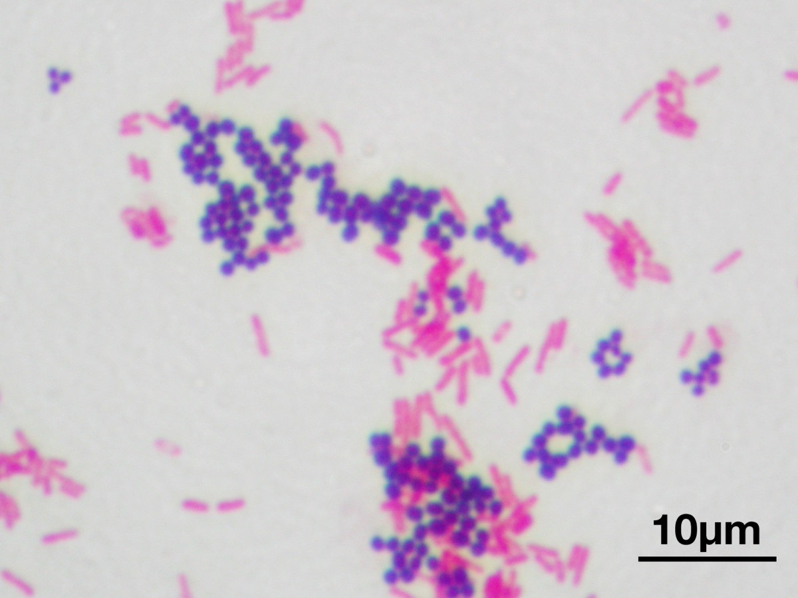
Estudia como si siguieras una muestra: del paciente al informe
Cada sección responde una sola pregunta y termina con una frase para recordar y con enlaces a las secciones que se conectan con ella. El índice de la izquierda marca lo que ya revisaste, y ese progreso se guarda en tu navegador.
1. Lee con una pregunta
Al inicio de cada sección hay una pregunta en cursiva. Intenta responderla antes de leer. Al final, compara con la frase en negro.
2. Toca las imágenes
Todas las fotografías se amplían al tocarlas. Mira primero la imagen, describe lo que ves y después lee el pie de figura.
3. Practica, no memorices
Usa el simulador de Gram, el juego ¿Qué medio siembro?, el árbol de decisión, las tarjetas y la autoevaluación.
Tres rutas según el tiempo que tengas
Ruta corta · 20 minutos
Para entender el mapa general antes de clase.
Ruta visual · 45 minutos
Para reconocer patrones en frotis, tinciones y placas.
Atajos de teclado: flechas ← → o AvPág / RePág cambian de sección.
Siete módulos, un solo hilo: la muestra
¿Por dónde pasa una muestra desde que se toma hasta que el médico lee el informe?
Cada técnica responde una pregunta distinta
¿Qué quiero saber hoy: si hay algo, si está vivo, qué es, si hay su ADN, si el cuerpo ya respondió, o si puedo decidir en minutos?
| Pregunta clínica | Técnicas que la responden | Fortaleza | Limitación frecuente | Sección |
|---|---|---|---|---|
| ¿Hay microorganismos y células inflamatorias? | Frotis directo, Gram, BAAR, KOH, tinta china | Minutos; orienta el tratamiento inicial | Sensibilidad limitada; no da especie | Gram |
| ¿El microorganismo está vivo y puedo estudiarlo? | Cultivo, hemocultivo, urocultivo cuantitativo | Aísla, cuantifica y permite antibiograma | Tarda de 18 horas a semanas | Cultivo |
| ¿Qué especie es? | Pruebas bioquímicas, MALDI-TOF, paneles automatizados, secuenciación | Identificación de rutina en minutos a horas | Depende de un cultivo puro y de bases de datos | Identificación |
| ¿Está su material genético? | PCR, RT-PCR, paneles multiplex (NAAT) | Alta sensibilidad y rapidez | No distingue vivo de muerto; riesgo de contaminación | PCR |
| ¿El cuerpo ya respondió? | IgM, IgG, seroconversión, avidez | Útil cuando no se puede cultivar | Ventana inmunológica y reacciones cruzadas | Serología |
| ¿Necesito decidir ahora? | Pruebas en el punto de atención: antígenos, moleculares rápidas | Resultado junto al paciente | Requiere control de calidad y a veces confirmación | POCT |
El flujo completo evita falsos negativos, falsos positivos y tratamientos innecesarios
¿En cuál de estos seis pasos crees que ocurren más errores?
La muestra debe venir del sitio de infección y evitar la microbiota vecina
¿Por qué una orina de bolsa colectora o un hisopo de la superficie de una herida casi nunca sirven?
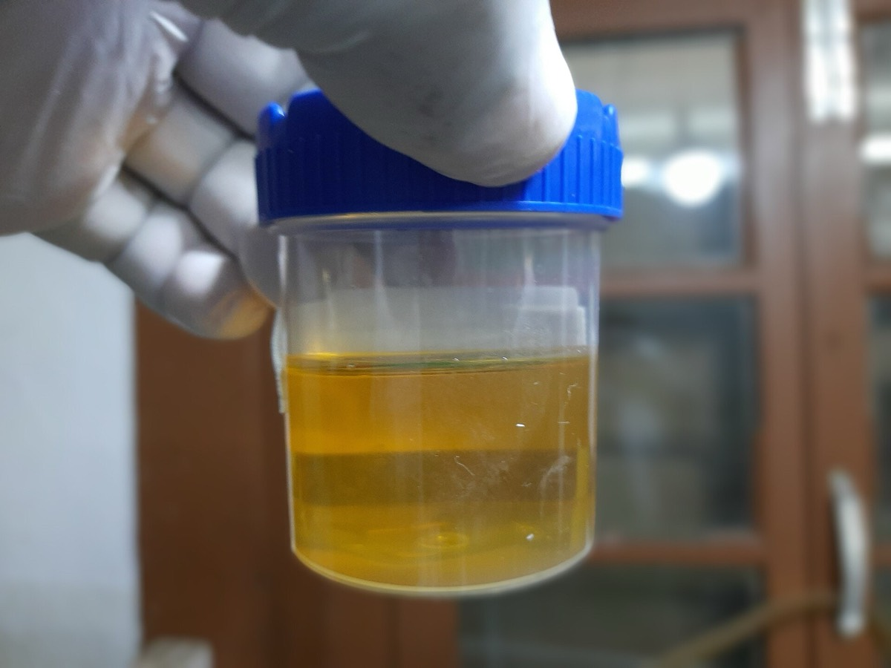
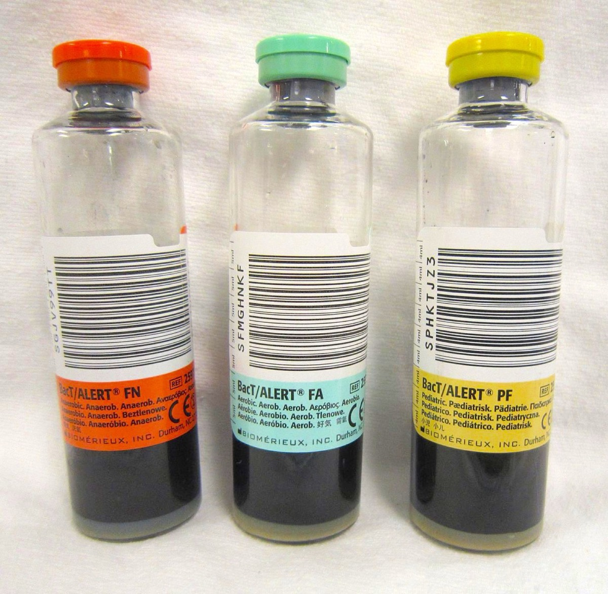
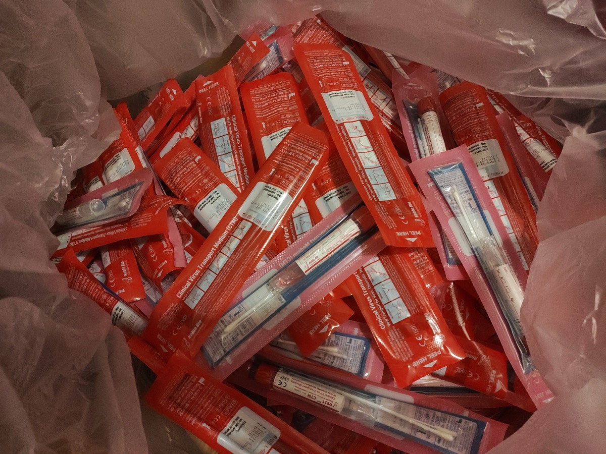
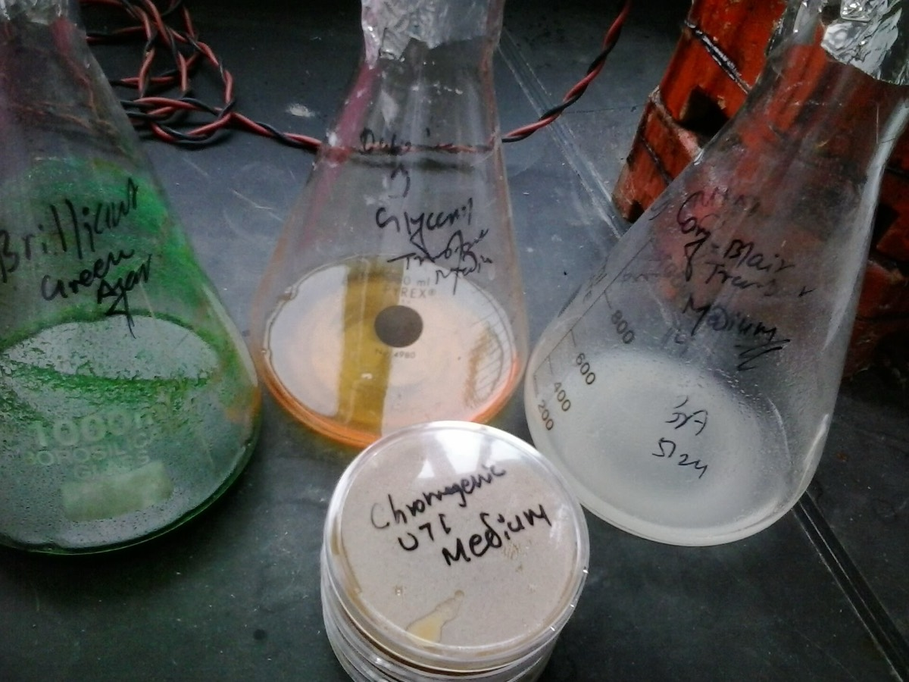
| Muestra | Se usa para | Clave de la toma | Lo que la invalida |
|---|---|---|---|
| Sangre | Bacteriemia, sepsis, endocarditis | Antisepsia estricta; 2 o 3 pares de frascos por venopunción distinta; 8 a 10 mL por frasco en adultos | Contaminación con piel, bajo volumen, un solo frasco, toma después del antibiótico |
| Orina | Infección de vías urinarias (IVU) | Chorro medio con aseo previo; sonda recién colocada; punción suprapúbica en lactantes | Bolsa colectora, demora sin refrigerar, recipiente no estéril |
| Esputo / lavado broncoalveolar | Neumonía, tuberculosis, oportunistas | Material purulento de vía inferior; evaluar calidad con Gram (más de 25 leucocitos y menos de 10 células epiteliales por campo) | Saliva, muestra escasa, transporte prolongado |
| Líquido cefalorraquídeo (LCR) | Meningitis, encefalitis | Procesar de inmediato; avisar al laboratorio; nunca refrigerar si se sospecha bacteria | Poco volumen, retraso, tubo inadecuado |
| Herida / absceso | Piel, tejidos blandos, anaerobios | Aspirado con jeringa o biopsia de tejido profundo | Hisopo de superficie, antiséptico residual, exposición al oxígeno |
| Heces | Gastroenteritis, parásitos, Clostridioides difficile | Recipiente limpio; Cary-Blair si habrá demora; heces líquidas para C. difficile | Contaminación con orina o agua; heces formadas para C. difficile |
| Exudado genital | Infecciones de transmisión sexual, vaginitis | Hisopo con medio apropiado; NAAT cuando esté disponible | Lubricantes, sitio incorrecto, temperatura inadecuada |
Primero se piensa el foco, después el recipiente
¿Qué seis cosas haces siempre, con cualquier muestra, antes de tomarla?
Los seis pasos comunes
- Confirmar la identidad del paciente con dos datos (nombre y fecha de nacimiento o número de expediente).
- Explicar el procedimiento y verificar la preparación (ayuno, aseo, suspensión de tratamientos si aplica).
- Elegir el sitio correcto: no tomar de zonas colonizadas si se sospecha infección profunda.
- Usar recipiente estéril o el medio de transporte que indique el laboratorio.
- Rotular en el momento: nombre o identificador, sitio exacto, fecha, hora y quién tomó la muestra.
- Enviar de inmediato con la solicitud completa: diagnóstico presuntivo y antibióticos recibidos.
Ejemplos que se preguntan en el examen
- Herida profunda: aspirado o tejido, no hisopo superficial.
- Neumonía: esputo purulento de vía inferior, no saliva.
- IVU: chorro medio o puerto de la sonda; nunca de la bolsa colectora.
- Meningitis: LCR urgente y hemocultivos; avisar al laboratorio.
- Bacteriemia: hemocultivos por venopunción, antes del antibiótico si no retrasa el tratamiento.
- Faringitis: hisopo de amígdalas y pared posterior, sin tocar lengua ni mejillas.
La calidad se decide por identidad, cantidad, momento y conservación
¿Qué muestras debe rechazar el laboratorio aunque el médico insista?
Lista mínima de aceptación
- Paciente, muestra, sitio anatómico, fecha y hora legibles y coincidentes con la solicitud.
- Diagnóstico presuntivo y antibióticos recibidos.
- Recipiente estéril, cerrado, sin fuga.
- Volumen suficiente para tinción, cultivo y pruebas moleculares.
- Transporte dentro del tiempo y la temperatura correctos.
Motivos de rechazo
- Muestra sin identificación o con datos discordantes.
- Hisopo seco cuando se requiere viabilidad.
- Envase roto, derramado o no estéril.
- Muestra de sitio superficial para una infección profunda.
- Retraso incompatible con el microorganismo buscado (por ejemplo, LCR refrigerado para Neisseria meningitidis).
- Muestras irrepetibles (LCR, biopsias) no se rechazan: se procesan y se anota la limitación en el informe.
Transportar no es guardar: cada microorganismo necesita una estrategia
¿Por qué la orina se refrigera, pero el LCR no?
Conservar viabilidad
Los medios de transporte Stuart, Amies y Cary-Blair mantienen vivas las bacterias sin dejarlas multiplicarse. Sirven para hisopos y heces cuando habrá demora. Las bacterias frágiles (Neisseria, Haemophilus, anaerobios) mueren con el frío o el oxígeno, por eso el LCR y los aspirados de absceso se llevan de inmediato y a temperatura ambiente.
Conservar ácidos nucleicos
Para PCR importa la estabilidad del ADN o ARN y evitar inhibidores. Los medios de transporte viral y los tubos con estabilizador protegen la muestra; algunos conservadores que sirven para morfología (formol) impiden la PCR.
Evitar crecimiento artificial
En orina, a temperatura ambiente, las bacterias se duplican cada 20 a 30 minutos: una contaminación de 1 000 UFC/mL puede parecer una infección de 100 000 UFC/mL en pocas horas. Por eso se refrigera o se procesa en menos de 2 horas.
| Muestra | Tiempo máximo | Temperatura | Nota |
|---|---|---|---|
| LCR para bacterias | Inmediato (menos de 1 hora) | Ambiente | Nunca refrigerar; el frío mata N. meningitidis y H. influenzae |
| Hemocultivos | Menos de 2 horas al incubador | Ambiente | No refrigerar; no llenar de más ni de menos |
| Orina | 2 horas | Ambiente; hasta 24 horas refrigerada (4 °C) | Tubos con ácido bórico permiten 24 horas sin frío |
| Heces para cultivo | 2 horas | Ambiente; en Cary-Blair hasta 48 horas refrigerada | Para C. difficile, refrigerar |
| Hisopo en Amies/Stuart | 24 horas | Ambiente o refrigerado según patógeno | Neisseria gonorrhoeae: sembrar de inmediato o usar NAAT |
| Esputo para BAAR | 24 horas | Refrigerado | Las micobacterias toleran el frío; la microbiota acompañante no crece |
Un medio de transporte mantiene viva la muestra sin dejar que crezca
¿Por qué un medio de transporte no lleva azúcares ni peptonas, si lo que queremos es que la bacteria sobreviva?
Son medios semisólidos o líquidos sin nutrientes, con amortiguadores y agentes reductores. Conservan la proporción original de microorganismos: los exigentes no mueren y los rápidos no se multiplican. Si tuvieran nutrientes, E. coli se duplicaría cada 20 minutos y taparía al patógeno.
Lo que tienen en común
- Sin fuente de carbono ni nitrógeno: nadie crece.
- Agentes reductores (tioglicolato, cisteína): bajan el oxígeno y protegen anaerobios y microaerófilos.
- Amortiguadores de fosfato: el pH no cambia con el tiempo.
- Sales para la osmolaridad.
- Agar al 0,3 a 0,5 % (semisólido) para que el hisopo quede fijo y no se seque.
- A veces carbón activado para neutralizar ácidos grasos y peróxidos tóxicos del algodón.
| Medio | Composición esencial | Para qué sirve | Muestras y microorganismos | Tiempo y temperatura |
|---|---|---|---|---|
| Stuart | Tioglicolato de sodio, glicerofosfato de sodio, cloruro de calcio, azul de metileno (indicador de oxidación), agar 0,3 % | El primer medio de transporte para hisopos; el glicerofosfato mantiene la humedad sin ser fuente de carbono útil para la mayoría | Hisopos de faringe, heridas, exudados; N. gonorrhoeae por pocas horas | Hasta 24 h a temperatura ambiente; refrigerado 48 h |
| Amies | Stuart modificado: amortiguador de fosfato en lugar de glicerofosfato, cloruros de sodio, potasio, calcio y magnesio, tioglicolato, agar; versión con carbón activado | Mejor supervivencia que Stuart; el carbón neutraliza ácidos grasos y peróxidos tóxicos del algodón | Hisopos en general; el de carbón para Neisseria, Haemophilus, Bordetella, anaerobios | 24 h ambiente; 48 h refrigerado (excepto Neisseria: nunca frío) |
| ESwab / Amies líquido | Amies líquido en tubo de 1 mL con hisopo floculado de nailon | El hisopo floculado libera toda la muestra; el mismo tubo sirve para cultivo, Gram y PCR | Cualquier hisopo: nasal, faríngeo, heridas, genital, MRSA | 48 h a temperatura ambiente o refrigerado según patógeno |
| Cary-Blair | Tioglicolato de sodio, fosfato disódico, cloruro de sodio, cloruro de calcio, agar 0,5 %, pH 8,4 | El pH alcalino y el bajo oxígeno preservan enteropatógenos frágiles; formulado para Vibrio | Heces y hisopos rectales: Salmonella, Shigella, Vibrio, Campylobacter, Yersinia, E. coli O157 | 48 a 72 h refrigerado; también para PCR entérica |
| Medio de transporte viral (UTM, VTM) | Solución salina balanceada de Hanks, albúmina o suero bovino, gelatina, amortiguador HEPES, rojo de fenol, antibióticos y antifúngico | Estabiliza virus, Chlamydia y Mycoplasma; los antibióticos evitan que las bacterias tapen el cultivo o la PCR | Hisopo nasofaríngeo, faríngeo, conjuntival, genital, lesiones vesiculares | Refrigerado hasta 48 a 72 h; congelar a –70 °C si tardará más. No sirve para cultivo bacteriano |
| JEMBEC / Transgrow | Placa de Thayer-Martin o Martin-Lewis en bolsa sellada con tableta generadora de CO2 | Cultivo y transporte a la vez: el gonococo se siembra en el consultorio e incuba en el camino | N. gonorrhoeae de sitios genitales, rectales o faríngeos cuando se necesita cultivo (antibiograma) | Sembrar de inmediato; a 35 °C en el trayecto; nunca refrigerar |
| Transporte para anaerobios (PRAS) | Tubo o vial prerreducido y anaeróbicamente esterilizado, con resazurina como indicador de oxígeno (rosa si entró aire), atmósfera de N2 o CO2 | Evita que el oxígeno mate a los anaerobios entre la toma y la siembra | Aspirados de absceso, líquidos de sitios estériles, tejidos; también jeringa tapada sin aire por menos de 30 minutos | Temperatura ambiente; procesar antes de 2 h (tejidos) o 24 h (vial) |
| Agua peptonada alcalina (enriquecimiento) | Peptona 1 %, NaCl 1 %, pH 8,6 | No es transporte estricto: enriquece Vibrio mientras inhibe a la microbiota por el pH | Heces con sospecha de cólera; se subcultiva a TCBS a las 6 a 8 h | Ambiente; subcultivar temprano |
| Solución salina estéril / caldo tioglicolato | NaCl 0,85 % o caldo con tioglicolato y resazurina | Evitan que tejidos y biopsias pequeñas se sequen | Biopsias, fragmentos óseos, catéteres | Ambiente; menos de 2 h |
El nivel de contención se define por el riesgo, el procedimiento y la posibilidad de aerosoles
¿Qué cambia entre abrir un tubo de orina y centrifugar un esputo con sospecha de tuberculosis?
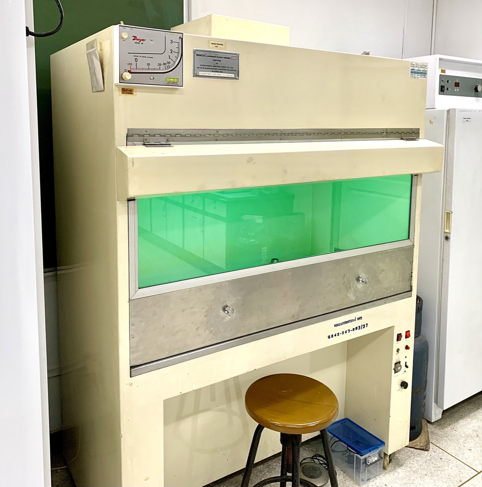
| Práctica | Por qué importa para el diagnóstico |
|---|---|
| Evaluación de riesgo por procedimiento | El mismo microorganismo exige medidas distintas si se abre un tubo cerrado, se centrifuga o se manipula un cultivo puro. |
| Equipo de protección personal según riesgo | Guantes, bata; protección ocular y respirador N95 si hay salpicaduras o aerosoles. |
| Cabina de bioseguridad clase II | Obligatoria para micobacterias, hongos filamentosos y muestras respiratorias con riesgo de aerosol. |
| Descontaminación de superficies y residuos | Evita contaminación cruzada entre muestras y exposición accidental. En México los residuos biológico-infecciosos se manejan según la NOM-087-ECOL-SSA1-2002. |
| Registro y trazabilidad | Permite detectar errores, contaminación o fallas del procedimiento. |
El microscopio óptico es la primera herramienta diagnóstica y sigue siendo la más rápida
¿Por qué las bacterias se observan con el objetivo de 100× y aceite de inmersión, y los hongos con 10× y 40×?
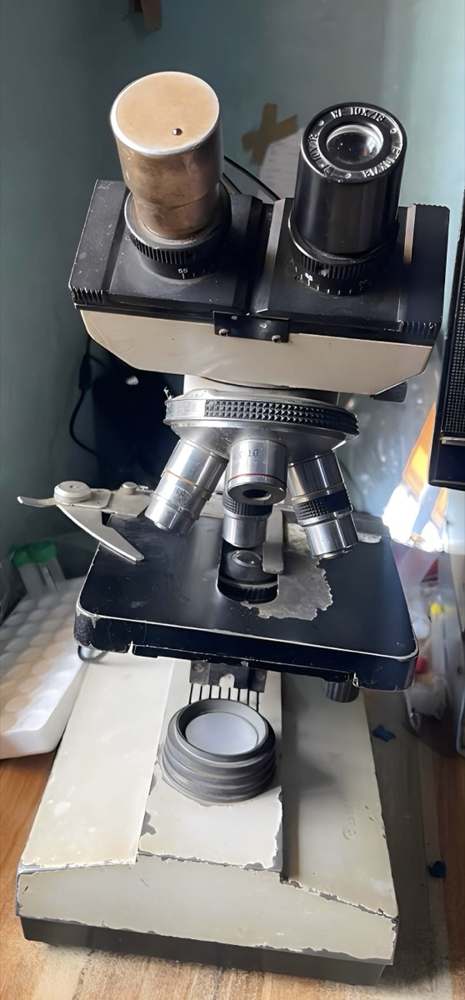
| Objetivo | Aumento total | Qué se busca |
|---|---|---|
| 10× | 100× | Calidad del frotis, células epiteliales y leucocitos, hifas en KOH, huevos de parásitos |
| 40× | 400× | Levaduras, cápsulas en tinta china, trofozoítos, distribución del material |
| 100× con aceite | 1 000× | Bacterias en Gram y BAAR: forma, agrupación, color, relación con leucocitos |
Rutina de lectura de un Gram
- Enfocar a 10× y recorrer la lámina: ¿el extendido es delgado y uniforme? ¿hay leucocitos y células epiteliales?
- Elegir un campo representativo (con pus, no con saliva).
- Una gota de aceite, objetivo 100×, enfoque fino.
- Leer al menos 20 a 40 campos antes de informar «no se observan bacterias».
- Describir: color, forma, agrupación, cantidad relativa, localización (intra o extracelular).
Un frotis útil es delgado, representativo, fijado y rotulado
Si la muestra es un esputo, ¿qué porción eliges para el frotis y por qué?
- Rotular el portaobjetos con lápiz o marcador resistente a alcohol, en el extremo esmerilado.
- Seleccionar la porción purulenta o mucoide de la muestra, o una colonia aislada del cultivo. Evitar el exceso de material.
- Extender en capa fina, del tamaño de una moneda; con colonia, primero una gota de solución salina y luego una porción mínima con el asa.
- Secar al aire por completo. Nunca calentar un frotis húmedo: hierve y deforma las células.
- Fijar: pasar dos o tres veces por la flama (calor suave, que la lámina se pueda tocar) o cubrir con metanol 1 minuto. El metanol conserva mejor la morfología de leucocitos y es el método recomendado para hemocultivos y LCR.
- Teñir, lavar con agua suave, secar sin frotar y observar.
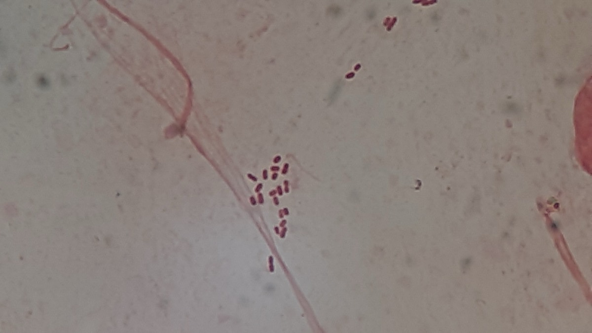
Prueba del calor correcto: después de fijar, el portaobjetos se puede tocar en el dorso de la mano sin quemar. Si está demasiado caliente, las células se deforman y los gramnegativos pueden verse grampositivos.
El extendido debe permitir ver células separadas, no una costra de muestra
¿Cómo sabes, sin ver el resultado, que tu frotis salió mal?
| Situación | Cómo se ve | Por qué importa |
|---|---|---|
| Frotis demasiado grueso | Zona oscura; no se distinguen bacterias ni células | Retiene colorante, no se decolora bien y produce falsos grampositivos |
| Lavado con demasiada fuerza | Se desprende la muestra; lámina casi vacía | Falso negativo |
| Calor excesivo | Células deformadas, «fantasmas», bacterias gramnegativas que parecen positivas | Altera morfología y agrupación |
| Muestra no representativa | Células epiteliales abundantes, pocos leucocitos | El resultado habla de la boca o la piel, no de la infección |
| Portaobjetos sin rótulo | No trazable | Error crítico: el resultado no puede asignarse al paciente |
| Colorante viejo o sin filtrar | Precipitado morado que simula cocos | Falso positivo; siempre filtrar el cristal violeta |
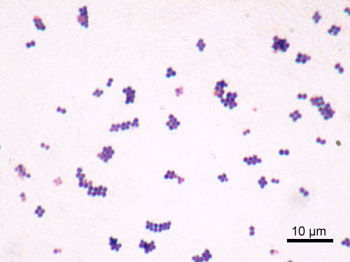
Gram orienta el tratamiento inicial y decide la ruta de identificación
¿En qué paso de la tinción se decide el color final de cada bacteria?
Secuencia clásica (1 minuto por paso)
- Cristal violeta: tinción primaria; todas las bacterias se tiñen de violeta.
- Lugol (yodo): mordiente; forma con el cristal violeta un complejo grande e insoluble.
- Alcohol-acetona: decoloración, el paso crítico. Dura entre 5 y 15 segundos, hasta que deja de escurrir violeta.
- Safranina (o fucsina): contraste; tiñe de rosa lo que perdió el violeta.
Lo que se informa
- Color: grampositivo violeta; gramnegativo rosa o rojo.
- Forma: cocos, bacilos, cocobacilos, bacilos curvos, filamentos.
- Agrupación: racimos, cadenas, pares (diplococos), empalizadas.
- Cantidad relativa: escasos, moderados, abundantes; o por campo.
- Contexto: leucocitos, células epiteliales, localización intracelular.
Simulador: ¿de qué color van quedando las bacterias?
Pulsa cada paso en orden. Después prueba los dos errores para ver qué pasa cuando la decoloración es insuficiente o excesiva.
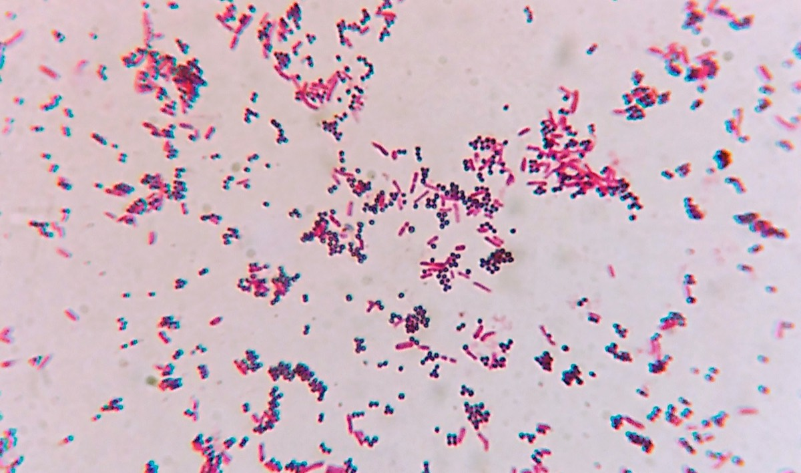
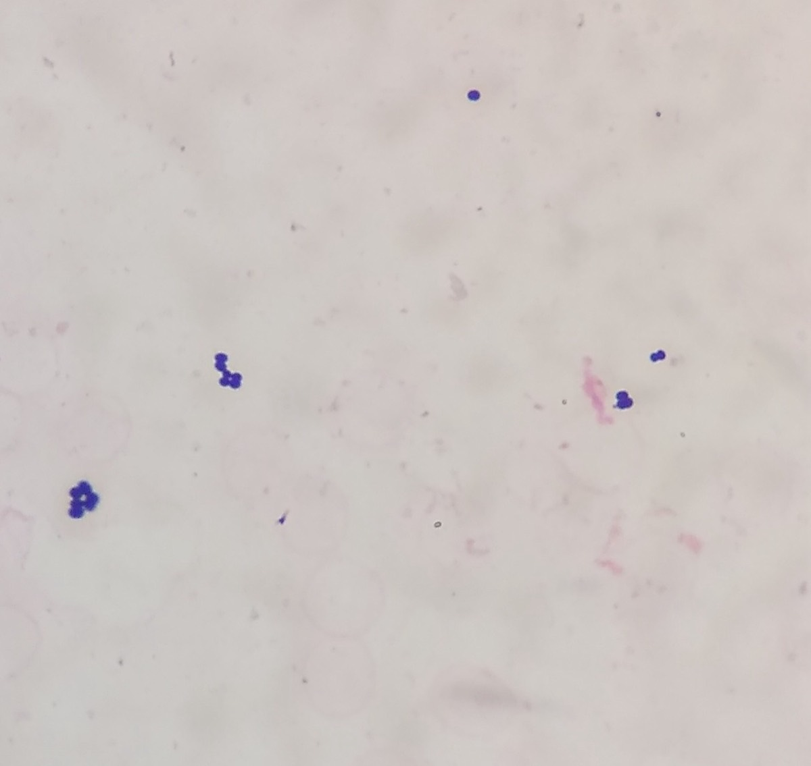
Gram separa a las bacterias por la estructura de su pared celular
¿Qué tiene la pared gramnegativa que hace que el alcohol le quite el color?
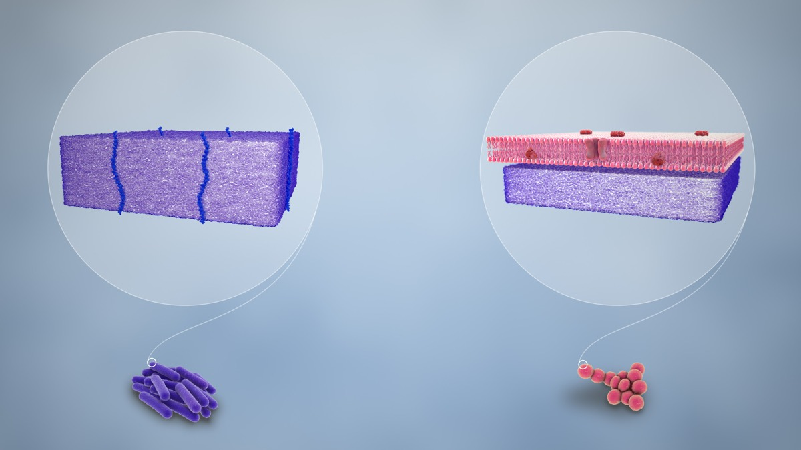
Grampositivas
El complejo cristal violeta-yodo es grande. Cuando el alcohol deshidrata la pared gruesa de peptidoglucano, los poros se cierran y el complejo queda atrapado. Resultado: violeta.
Ejemplos: Staphylococcus, Streptococcus, Enterococcus, Listeria, Bacillus, Clostridium, Corynebacterium.
Gramnegativas
El alcohol disuelve los lípidos de la membrana externa; el peptidoglucano delgado no retiene el complejo, que se escapa. La safranina tiñe después. Resultado: rosa o rojo.
Ejemplos: Escherichia coli, Klebsiella, Pseudomonas, Neisseria, Haemophilus, Salmonella, Bacteroides.
Forma, agrupación y contexto reducen el diagnóstico diferencial en minutos
Describe cada imagen en voz alta antes de leer el pie: color, forma, agrupación y qué hay alrededor.
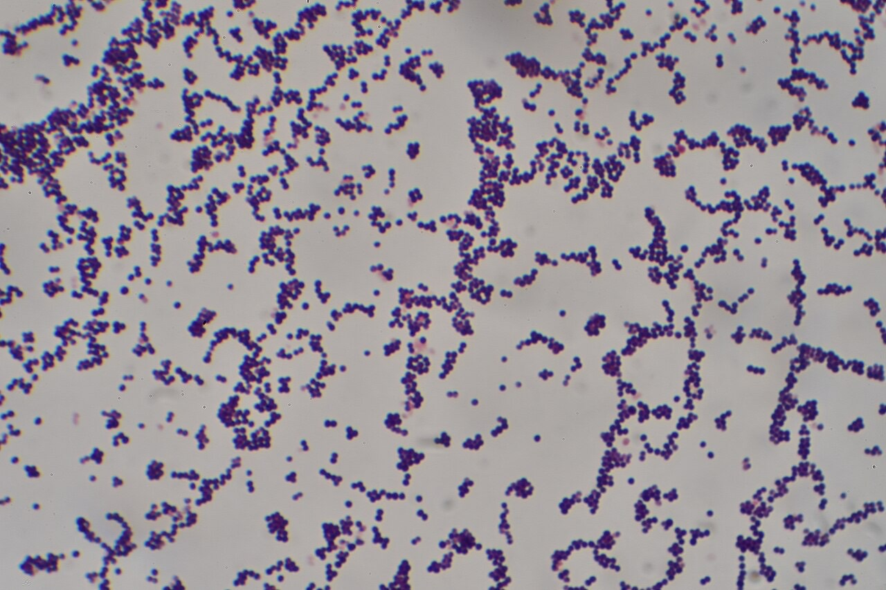
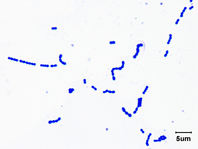
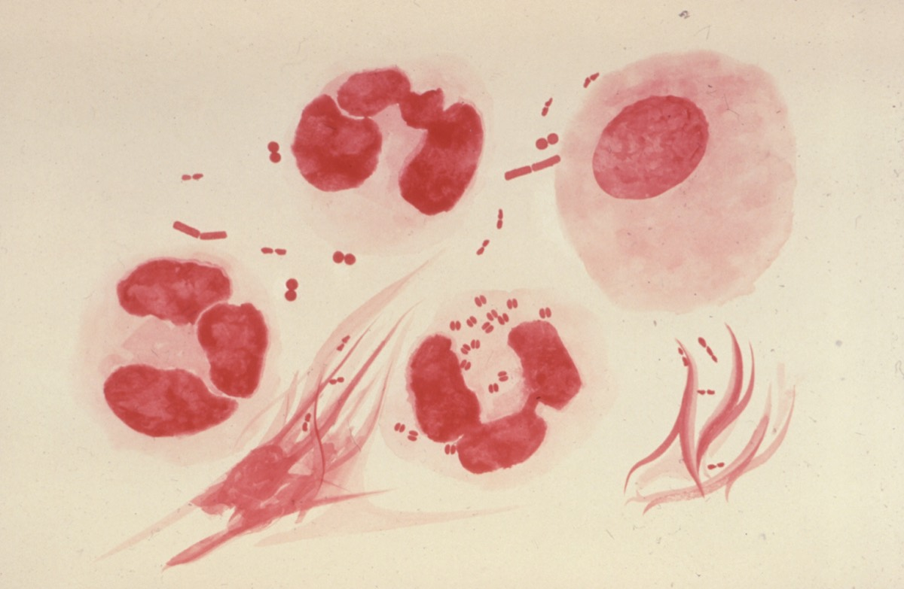
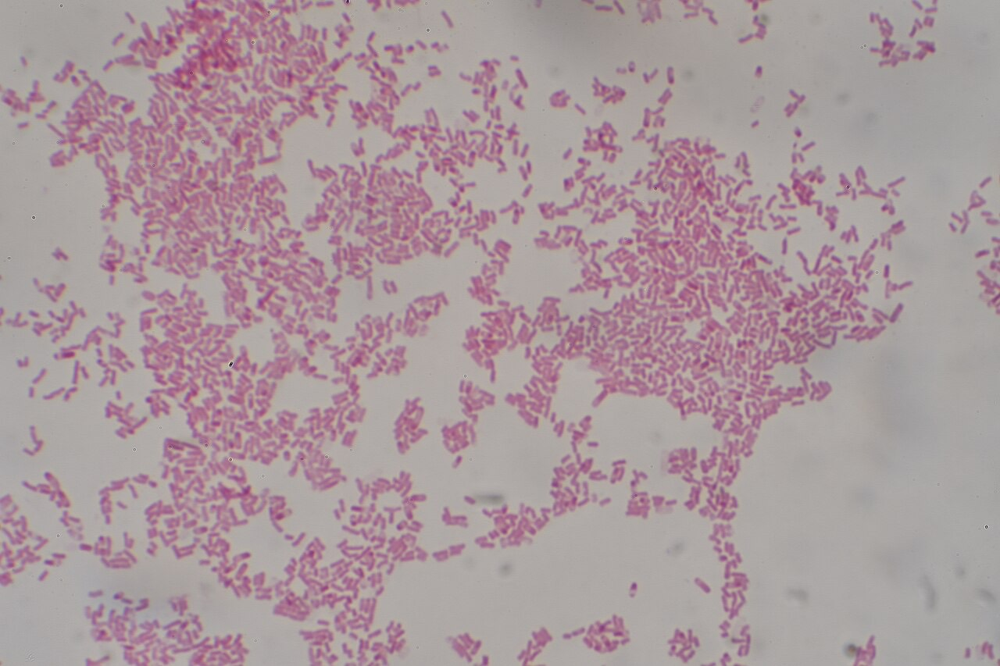
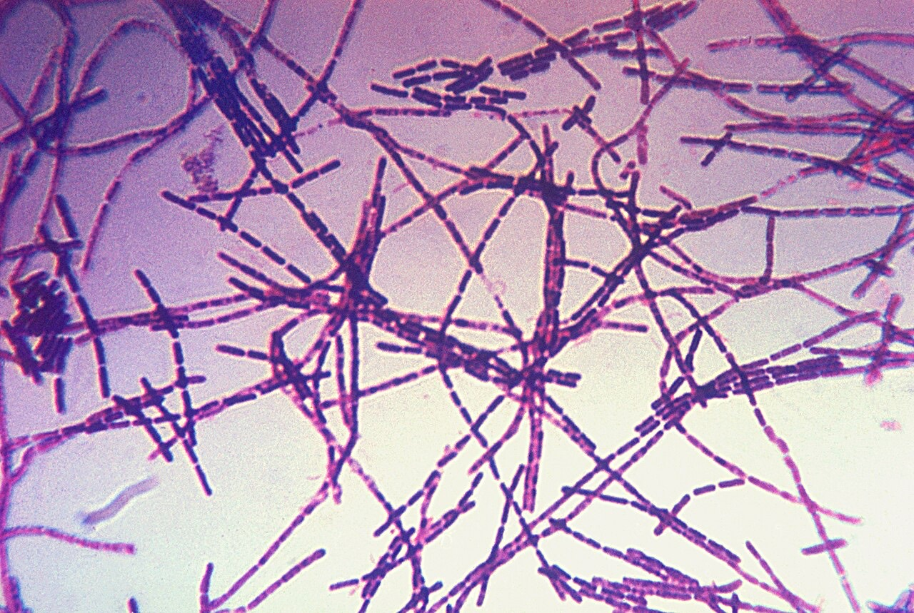
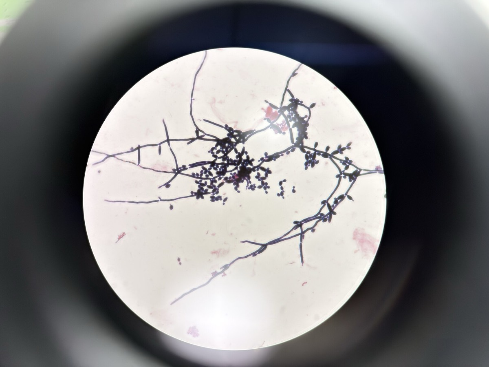
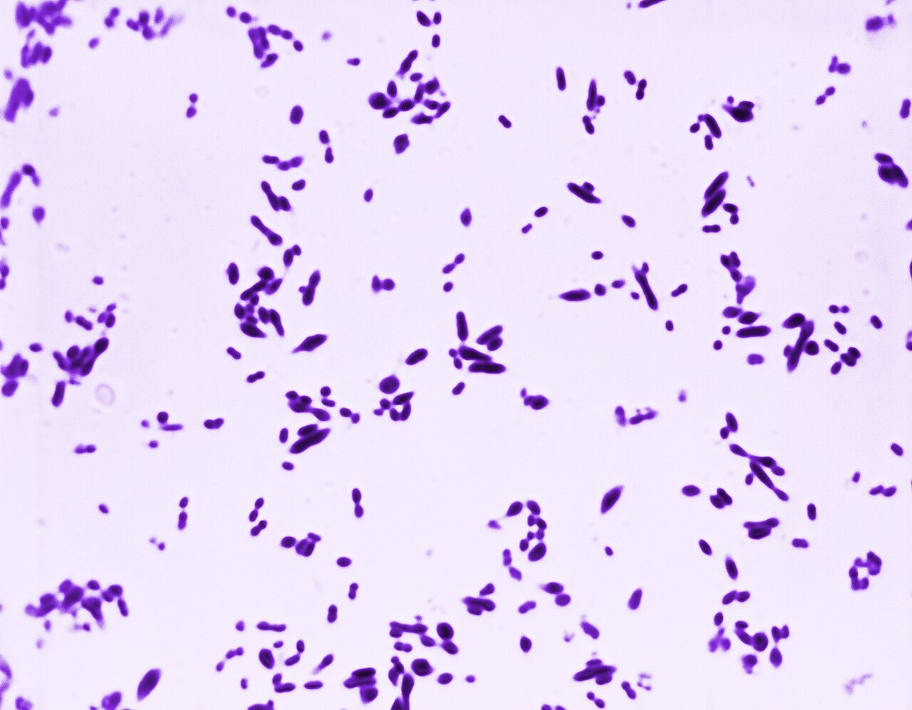
| Hallazgo en Gram | Grupos probables | Dato clínico que cambia la lectura |
|---|---|---|
| Cocos grampositivos en racimos | Staphylococcus spp. | En hemocultivo: ¿contaminación de piel (estafilococo coagulasa negativa) o bacteriemia real? Cuenta cuántos frascos son positivos. |
| Cocos grampositivos en cadenas | Streptococcus, Enterococcus | Meningitis, sepsis neonatal o endocarditis elevan la urgencia. |
| Diplococos gramnegativos intracelulares | Neisseria gonorrhoeae, N. meningitidis (en LCR) | Alto valor en uretra masculina y en LCR; menor en cérvix y faringe. |
| Bacilos gramnegativos | Enterobacterales, no fermentadores, anaerobios | Orina, sangre, herida y vía respiratoria tienen significados distintos. |
| Bacilos grampositivos grandes con esporas | Bacillus, Clostridium | En herida con gas y necrosis: urgencia quirúrgica. |
| Ausencia de bacterias | No descarta infección | Antibiótico previo, baja carga (se necesitan 105 bacterias/mL para ver una por campo) o patógeno que el Gram no tiñe. |
Ziehl-Neelsen y auramina detectan BAAR, pero no confirman por sí solas M. tuberculosis
Un esputo con BAAR positivo, ¿ya es tuberculosis confirmada?
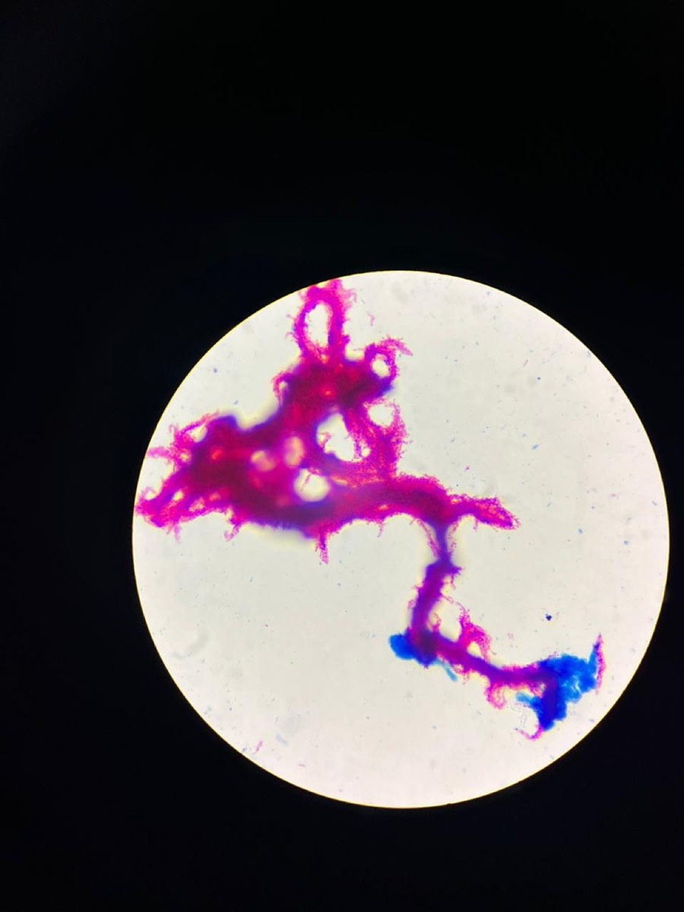
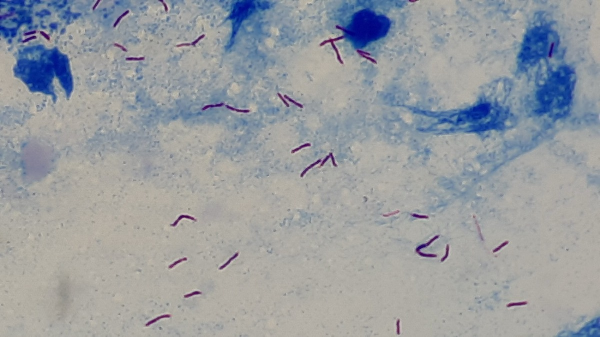
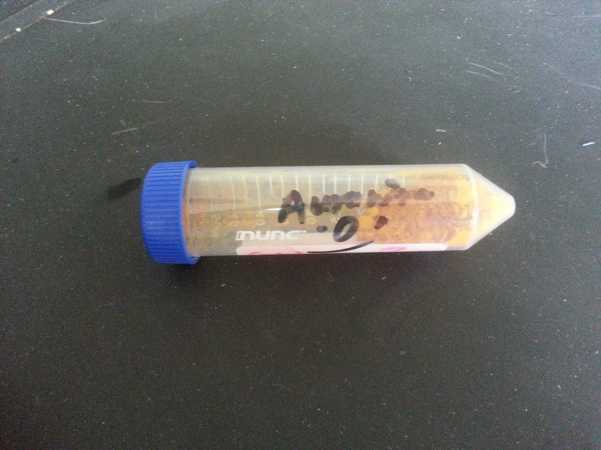
Uso
Esputo seriado (dos muestras, una de ellas matutina), lavado bronquial, orina, LCR, biopsias, ante sospecha de tuberculosis o micobacterias no tuberculosas. También, con la variante modificada (Kinyoun), para Nocardia y coccidios intestinales.
Ventaja
Resultado el mismo día. La OMS y la NOM-006-SSA2-2013 consideran la baciloscopia una herramienta básica de diagnóstico y de seguimiento del tratamiento.
Límite
Sensibilidad de 50 a 60 % frente al cultivo: hacen falta unos 10 000 bacilos/mL para ver uno. No distingue M. tuberculosis de micobacterias no tuberculosas. Por eso el diagnóstico se completa con NAAT (Xpert MTB/RIF) y cultivo.
Las micobacterias resisten la decoloración por sus ácidos micólicos
Si el alcohol ácido decolora a casi todas las bacterias, ¿por qué no a las micobacterias?
Pasos y colores
- Fucsina fenicada con calor (hasta que emita vapores, 5 minutos): fuerza la entrada del colorante rojo.
- Alcohol ácido (etanol con ácido clorhídrico al 3 %): decolora todo lo que no tiene ácidos micólicos.
- Azul de metileno (o verde de malaquita): contraste del fondo.
- Lectura a 1 000×: BAAR rojos sobre fondo azul. Se recorren 100 campos antes de informar negativo.
La variante de Kinyoun («en frío») usa más fenol en lugar de calor. Para BAAR débiles (Nocardia, Cryptosporidium) se usa un ácido más suave (sulfúrico al 1 %): tinción ácido-alcohol resistente modificada.
Animación: la tinción de Ziehl-Neelsen paso a paso
Pulsa «Reproducir» o avanza con los pasos. Los bacilos delgados son micobacterias; los cocos representan a las demás bacterias y a las células del fondo.
La tinción se elige según lo que se busca: pared, cápsula, espora, hongo o parásito
¿Qué preparación pedirías ante una sospecha de meningitis por Cryptococcus, una uña engrosada y una herida con gas?
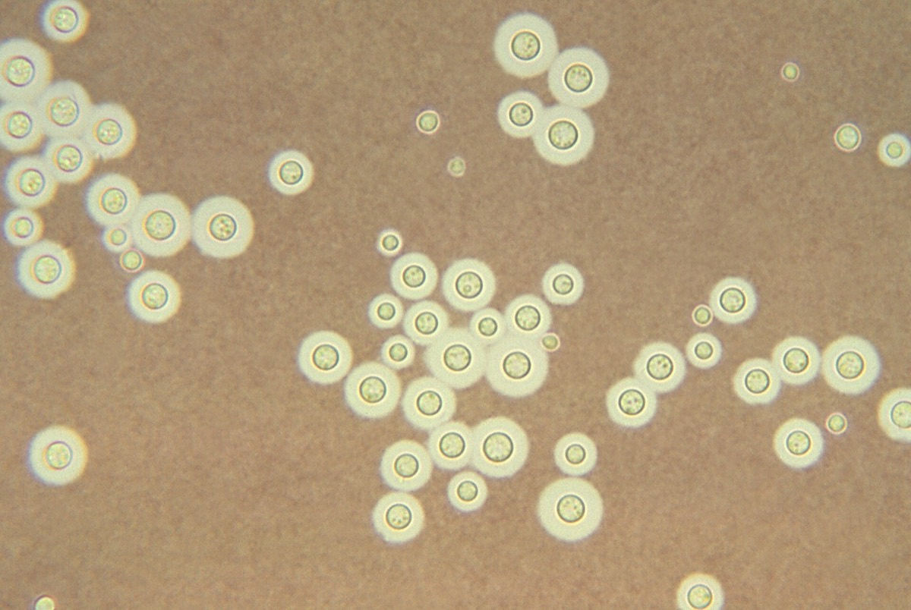
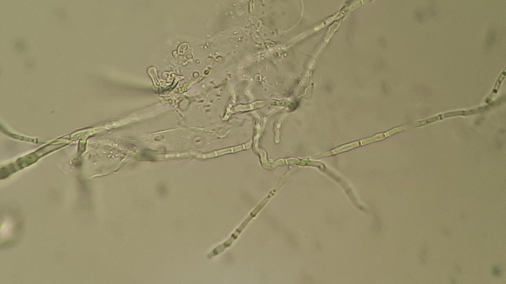
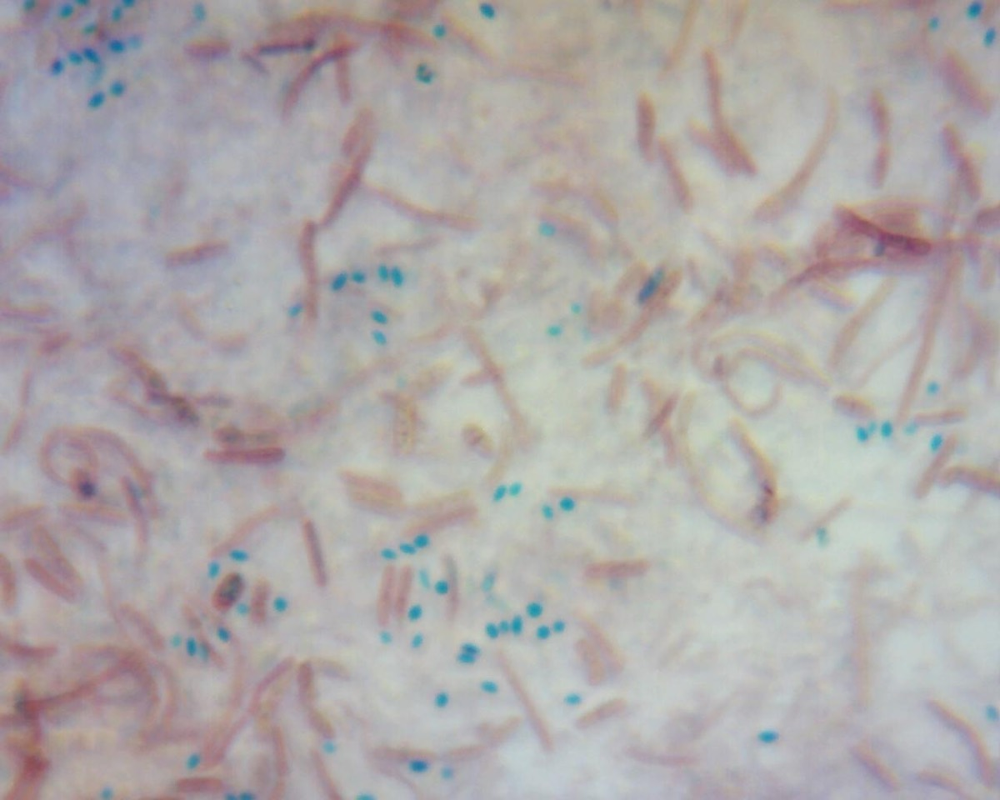
| Técnica | Detecta mejor | Muestras y uso | Punto crítico |
|---|---|---|---|
| KOH 10 a 20 % | Hifas, levaduras, dermatofitos | Piel, uñas, pelo, secreción vaginal, esputo | Aclara queratina; no da género ni especie. Calcoflúor blanco lo mejora con fluorescencia. |
| Tinta china o nigrosina | Cápsula de Cryptococcus | LCR | Sensibilidad de 50 % frente al antígeno criptocócico; leucocitos pueden confundirse. |
| Schaeffer-Fulton | Endosporas de Bacillus y Clostridium | Cultivos, muestras ambientales | La posición de la espora (central, terminal) ayuda a la identificación. |
| Giemsa / Wright | Hemoparásitos, Borrelia, inclusiones intracelulares, Histoplasma | Sangre, médula ósea, frotis de tejido | El grosor y el tiempo de tinción cambian la sensibilidad; gota gruesa y frotis fino se complementan. |
| Tricrómica / ácido-alcohol resistente modificada | Protozoarios y coccidios intestinales | Heces con conservador | El conservador define qué tinciones y qué PCR siguen siendo posibles. |
| Azul de metileno / azul de lactofenol | Morfología general; estructuras fúngicas en cultivo | Frotis rápidos, cinta adhesiva de mohos | No informa Gram; solo forma y tamaño. |
| Campo oscuro | Espiroquetas móviles (Treponema pallidum) | Exudado de chancro | Requiere muestra fresca y experiencia; hoy se prefiere serología y PCR. |
El cultivo sigue siendo indispensable porque demuestra viabilidad y entrega el microorganismo en la mano
Si la PCR es más rápida y más sensible, ¿para qué seguimos cultivando?
Los métodos moleculares detectan ácidos nucleicos, vivos o muertos. El cultivo recupera organismos vivos, permite obtener colonias puras, hacer antibiograma fenotípico y guardar la cepa para vigilancia epidemiológica.
- Detecta y cuantifica: el recuento en orina (UFC/mL) separa infección de contaminación.
- Aísla: separa al patógeno de la microbiota acompañante en una muestra mixta.
- Permite el antibiograma: la única forma de medir directamente si un antibiótico inhibe a esa cepa.
- Descubre lo inesperado: la PCR solo encuentra lo que busca; el cultivo también encuentra lo que nadie pidió.
- Sostiene la vigilancia: tipificación, secuenciación del genoma y bancos de cepas.
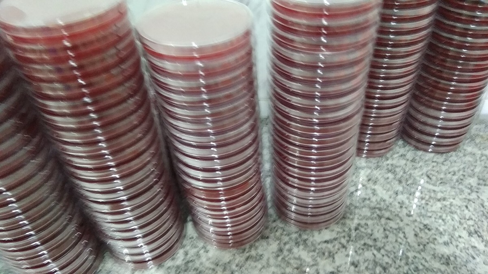
Preparar un medio es pesar, disolver, ajustar, esterilizar, verter y controlar
¿Por qué la sangre se agrega después de esterilizar y no antes?
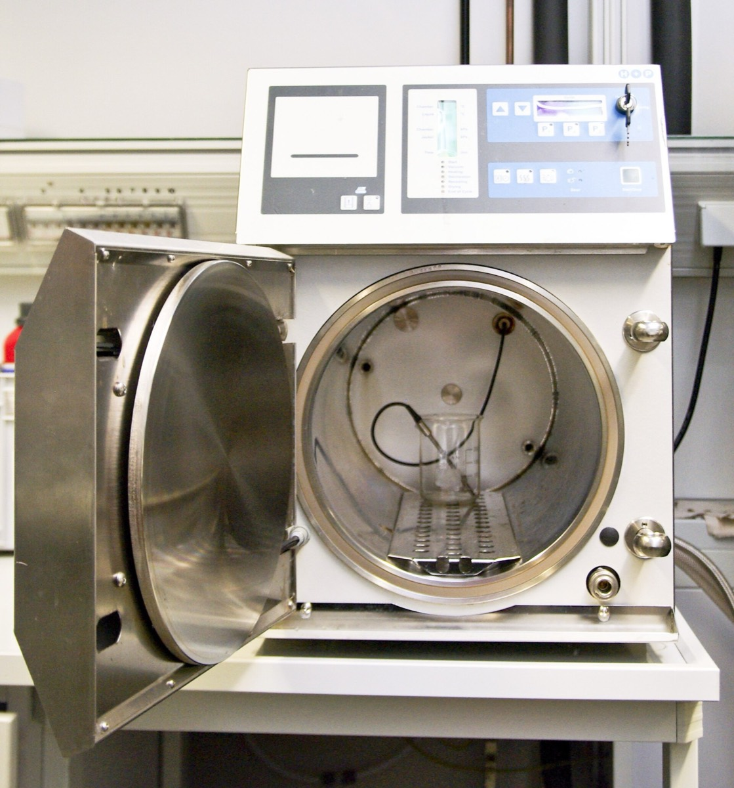
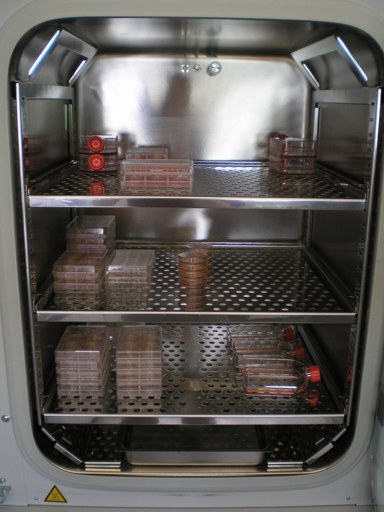
Control físico
Color y transparencia esperados, volumen uniforme, superficie sin burbujas ni grietas, sin deshidratación ni contaminación visible.
Control biológico
Cepas de referencia (por ejemplo E. coli ATCC 25922, S. aureus ATCC 25923): deben crecer, inhibirse o cambiar de color exactamente como indica la fórmula.
Errores comunes
pH incorrecto, sobrecalentamiento (agar que no gelifica), placas con agua de condensación, sangre agregada demasiado caliente (se hemoliza y se vuelve «chocolate» sin querer), almacenamiento prolongado.
Un medio de cultivo traduce las necesidades biológicas de la bacteria en una receta controlada
Si tuvieras que inventar un medio que solo deje crecer estafilococos, ¿qué le pondrías y qué le quitarías?
Base nutritiva
Agua, peptonas (proteínas digeridas: fuente de nitrógeno y aminoácidos), extractos de carne o levadura (vitaminas), carbohidratos (energía), sales y amortiguadores (osmolaridad y pH).
Factores de crecimiento
Sangre, suero, hemina (factor X), NAD (factor V), vitaminas o atmósfera con CO2. Permiten crecer a las bacterias «exigentes» o fastidiosas: Haemophilus, Neisseria, estreptococos.
Sustratos diferenciales
Lactosa, manitol, sacarosa, esculina, tiosulfato (H2S), urea, con un indicador de pH o un cromógeno: la reacción metabólica se vuelve visible como color.
Gelificante
Agar al 1,5 %: polisacárido de algas rojas que funde a 100 °C y solidifica a 45 °C. Casi ninguna bacteria lo digiere, por eso reemplazó a la gelatina. Al 0,3 a 0,5 % da medios semisólidos para motilidad.
Atmósfera y temperatura
Aerobiosis, 5 a 10 % de CO2, microaerofilia o anaerobiosis a 35 a 37 °C; 30 °C para hongos; 42 °C para Campylobacter. La atmósfera es parte de la receta, no un detalle.
Líquido, sólido y semisólido responden preguntas distintas
¿Por qué el hemocultivo es un caldo y el urocultivo una placa?
| Estado | Cómo es | Para qué sirve | Ejemplos |
|---|---|---|---|
| Caldo | Líquido, sin agar | Multiplicar una carga baja, enriquecer, recuperar bacterias dañadas por antibiótico; se lee por turbidez | Caldo de infusión cerebro-corazón (BHI), tioglicolato, selenito, frascos de hemocultivo |
| Agar en placa | Caldo con 1,5 % de agar | Colonias aisladas, morfología, recuento y pureza | Agar sangre, MacConkey, agar chocolate |
| Semisólido | 0,3 a 0,5 % de agar | Motilidad, transporte, atmósfera reducida | SIM, medio de motilidad, Cary-Blair, Amies |
| Inclinado en tubo | Agar solidificado en diagonal | Conservar cepas, pruebas bioquímicas, cultivos lentos | TSI, Kligler, Löwenstein-Jensen, citrato de Simmons |
| Bifásico | Fase sólida y líquida en el mismo frasco | Recuperar agentes exigentes con subcultivo automático | Castañeda (para Brucella), algunos hemocultivos |
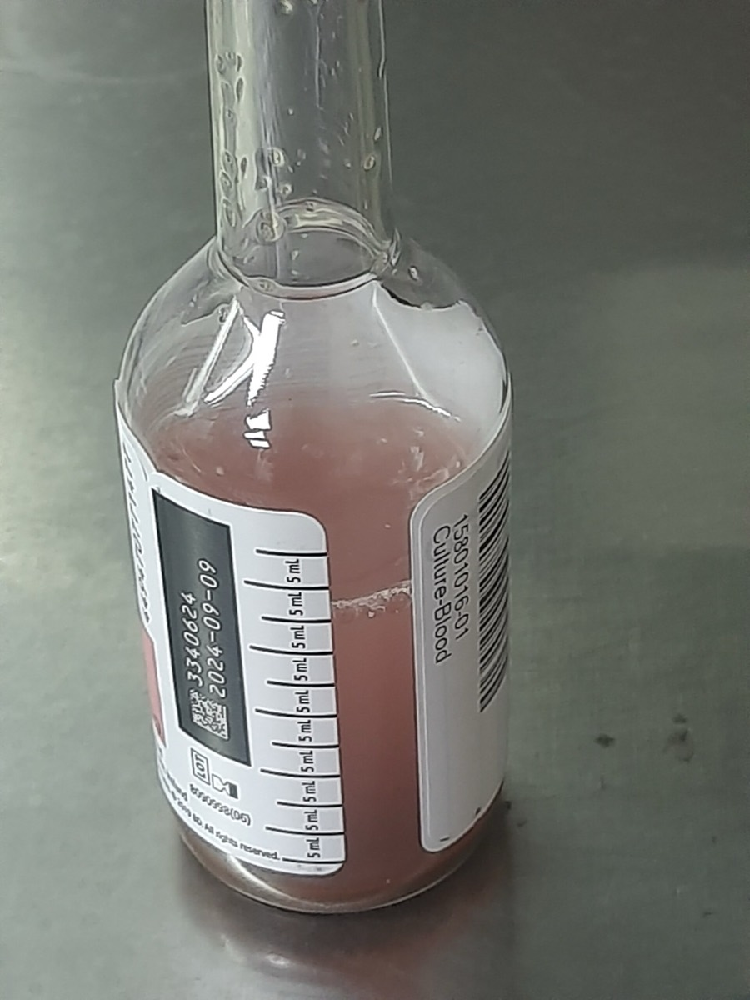
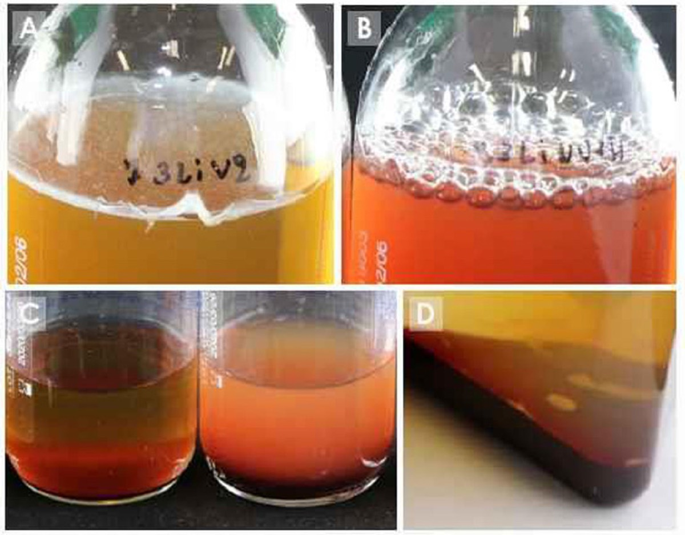
Los medios se eligen por la muestra, el patógeno sospechado y el resultado que se espera ver
MacConkey aparece en dos filas de la tabla. ¿Por qué un mismo medio puede ser dos cosas a la vez?
| Tipo | Propósito | Ejemplos | Qué aporta al diagnóstico |
|---|---|---|---|
| Basal (no selectivo) | Soporte general | Agar nutritivo, agar soya tripticaseína (TSA) | Recupera bacterias no exigentes; base de otros medios. |
| Enriquecido | Alimentar microorganismos exigentes | Agar sangre, agar chocolate, BHI | Crecen patógenos fastidiosos; el agar sangre además muestra hemólisis. |
| Selectivo | Inhibir la microbiota acompañante | MacConkey, manitol salado (MSA), CNA, Thayer-Martin | Dirige la búsqueda en muestras polimicrobianas (heces, piel, faringe). |
| Diferencial | Hacer visible el metabolismo | MacConkey, XLD, CLED, TSI, EMB | Separa fenotipos por color, H2S, gas o pH. |
| Enriquecimiento en caldo | Amplificar una carga baja | Selenito, tetrationato, tioglicolato, hemocultivo | Mejora la recuperación cuando hay pocas bacterias o antibiótico previo. |
| Especial | Un patógeno con necesidades propias | Löwenstein-Jensen, Middlebrook, Sabouraud, BCYE, TCBS, Bordet-Gengou | Condiciones para micobacterias, hongos, Legionella, Vibrio o Bordetella. |
| Transporte | Mantener la muestra hasta el procesamiento | Amies, Stuart, Cary-Blair, medio de transporte viral | Preserva viabilidad o ácidos nucleicos sin sobrecrecimiento. |
La fórmula explica qué crece, qué se inhibe y qué se ve
Para cada placa, di el nombre del medio, su ingrediente clave y qué significa el color.
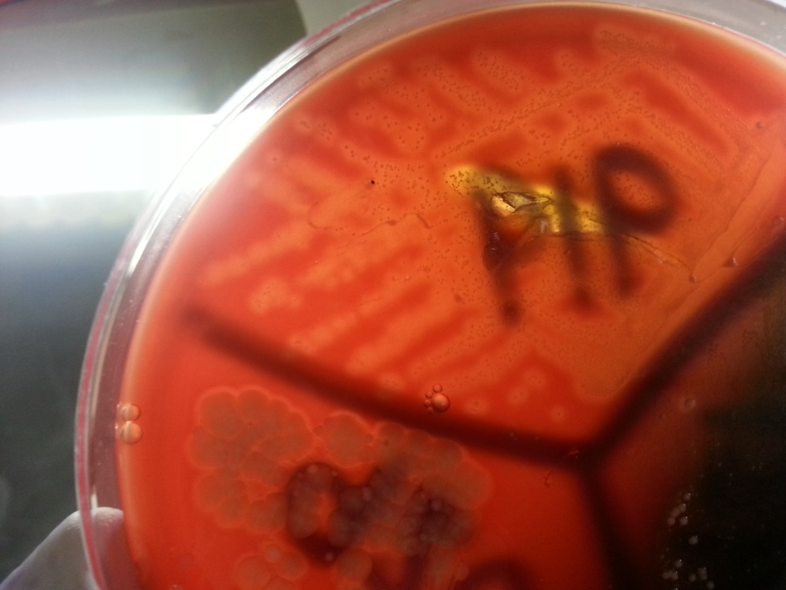
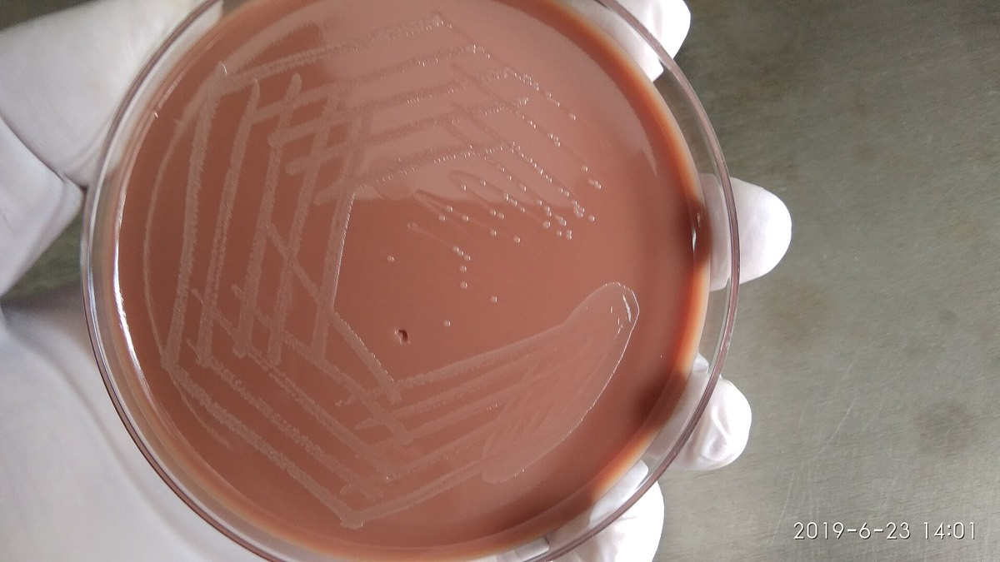
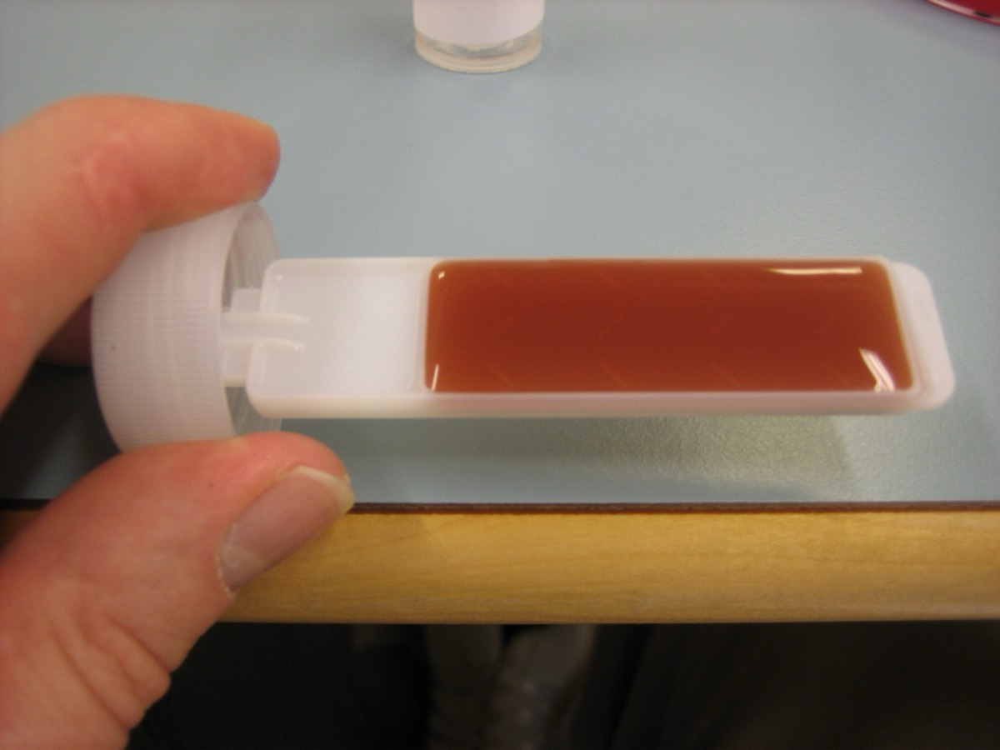
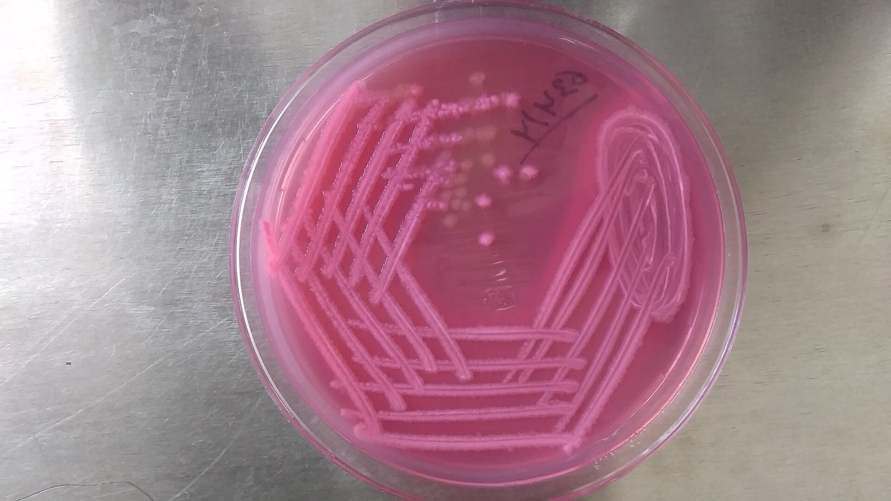
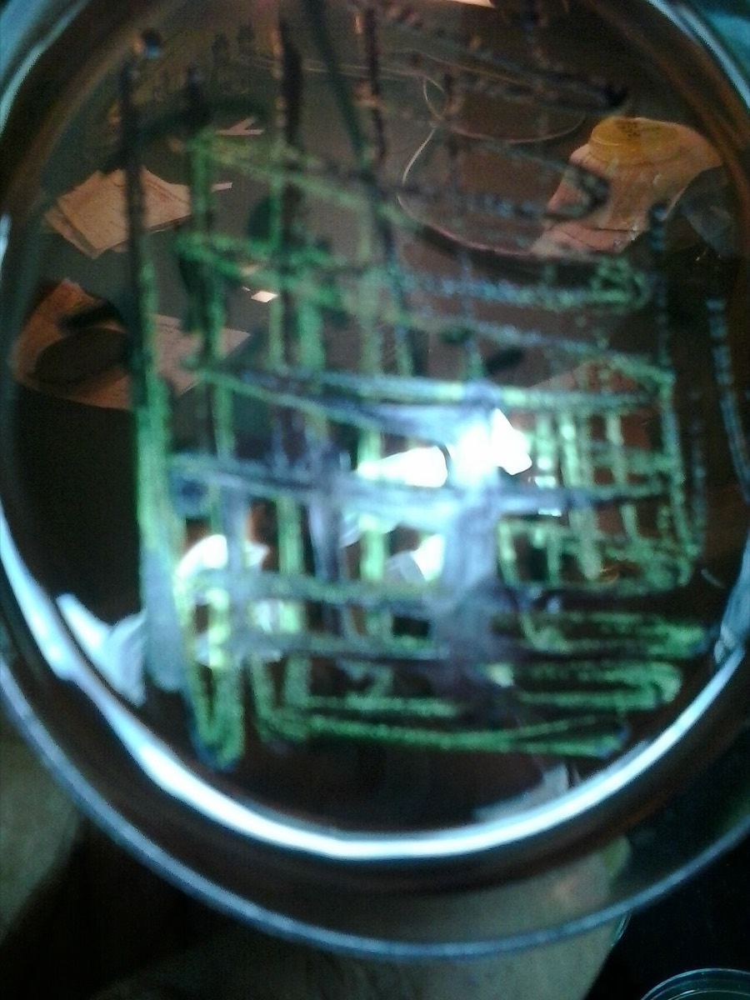
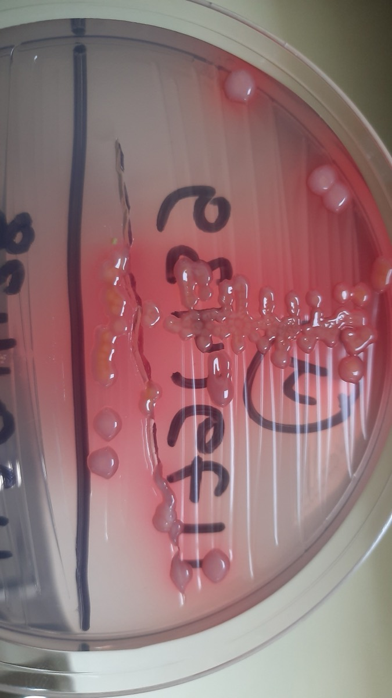
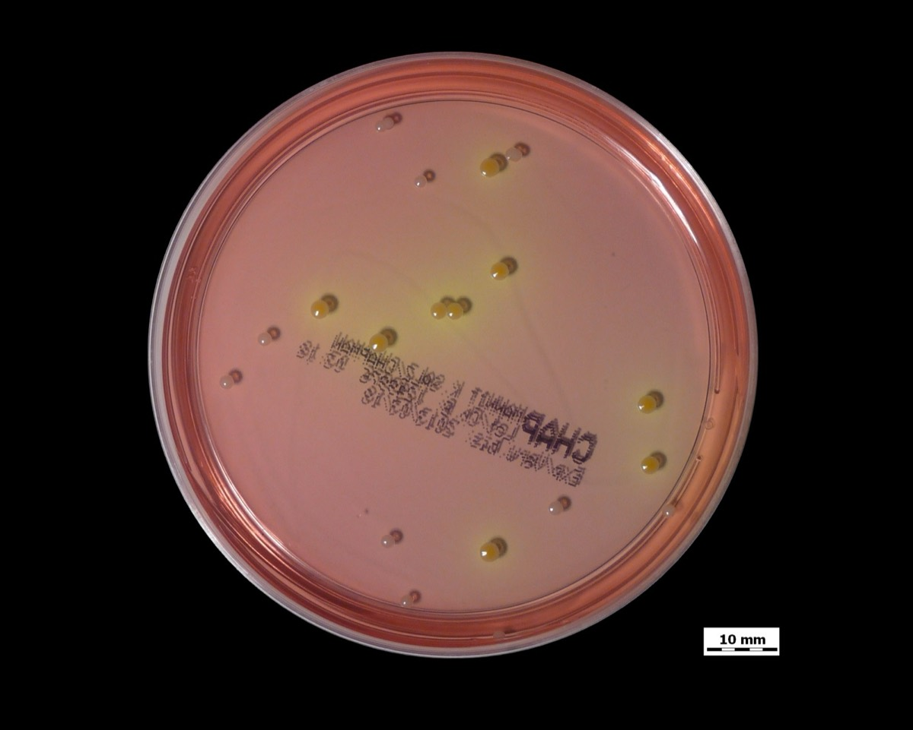
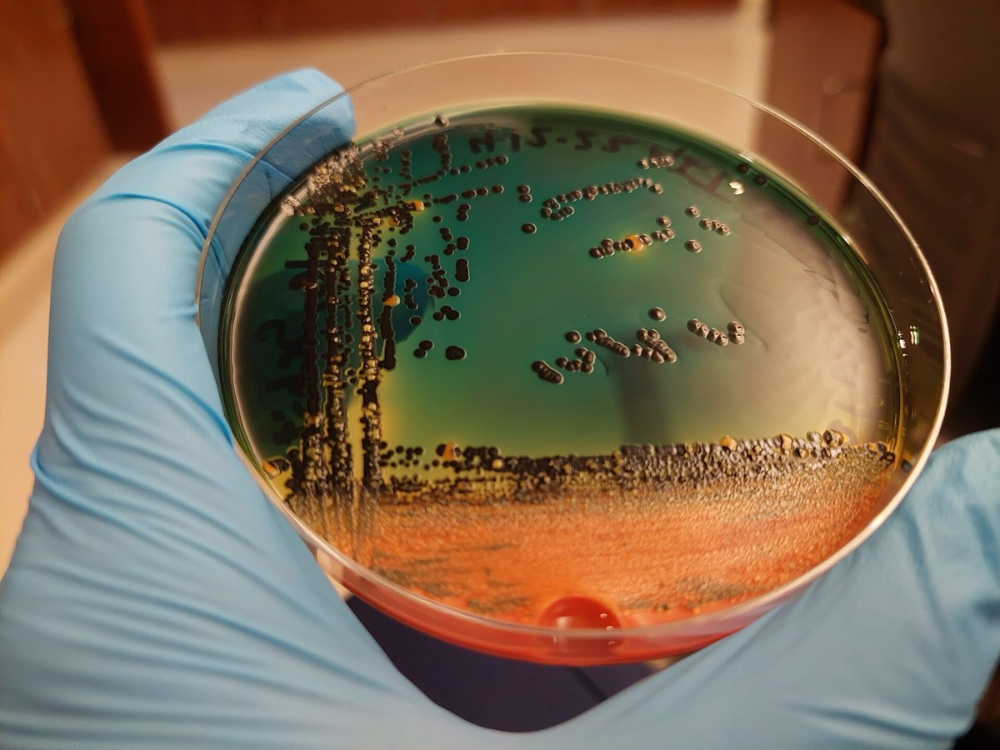
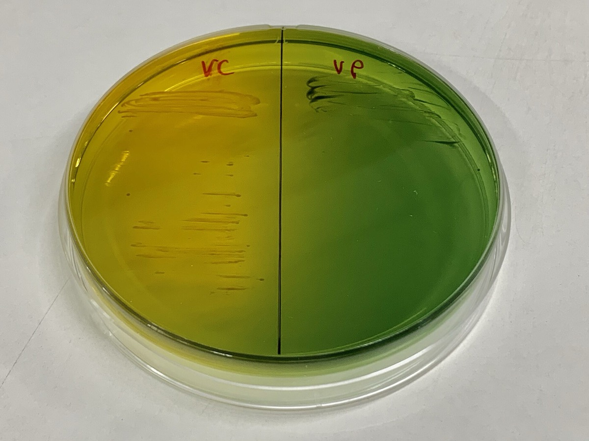
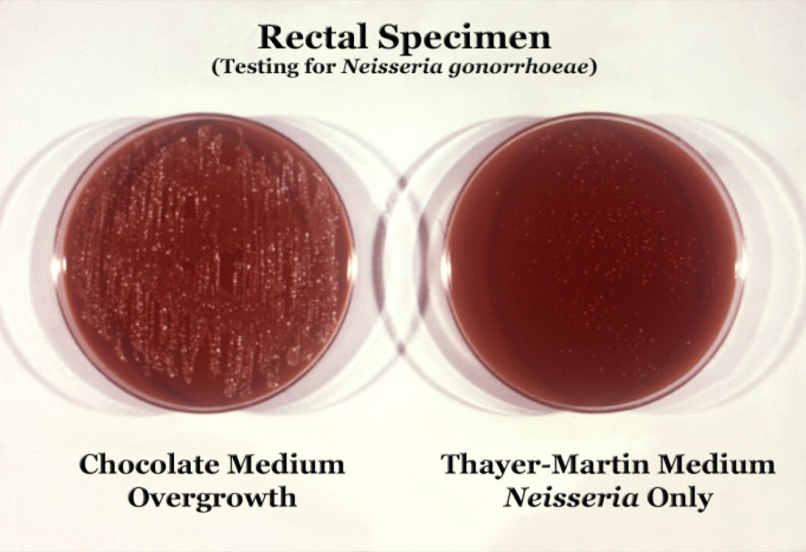
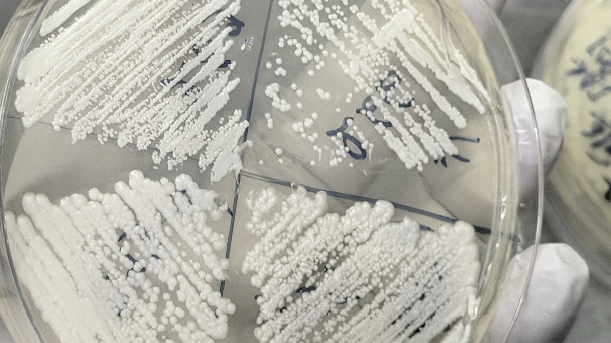
| Medio | Ingredientes clave | Selecciona / diferencia | Uso médico habitual |
|---|---|---|---|
| Agar sangre 5 % | Base nutritiva y sangre de carnero desfibrinada | Hemólisis alfa, beta o gamma | Vía respiratoria, heridas, estreptococos, casi toda muestra |
| Agar chocolate | Sangre lisada por calor: libera hemina y NAD | Enriquecido, no selectivo | Haemophilus, Neisseria, LCR, vía respiratoria |
| MacConkey | Peptonas, lactosa, sales biliares, cristal violeta, rojo neutro | Gramnegativos; fermentadoras rosas | Enterobacterales y no fermentadores en cualquier muestra |
| Manitol salado | NaCl 7,5 %, manitol, rojo de fenol | Estafilococos; S. aureus amarillo | Portadores nasales, piel, heridas |
| CLED | Lactosa, cistina, sin electrolitos, azul de bromotimol | Evita el enjambre de Proteus; fermentadoras amarillas | Urocultivo |
| XLD / Hektoen | Xilosa o lactosa, lisina, desoxicolato o bilis, tiosulfato, hierro | Entéricos; H2S negro | Coprocultivo para Salmonella y Shigella |
| Thayer-Martin | Chocolate con vancomicina, colistina, nistatina y trimetoprim | Neisseria patógenas | Gonorrea en sitios con microbiota |
| Sabouraud | Dextrosa alta, peptonas, pH ácido, a veces antibióticos | Hongos | Dermatofitos, levaduras, mohos |
| Löwenstein-Jensen / Middlebrook | Huevo o albúmina, glicerol, verde de malaquita | Micobacterias; crecimiento lento | Tuberculosis y micobacterias no tuberculosas |
| TCBS | Tiosulfato, citrato, sales biliares, sacarosa, pH 8,6 | Vibrio; sacarosa amarilla | Cólera y vibriosis |
| Tioglicolato (caldo) | Tioglicolato de sodio, cisteína, resazurina | Gradiente de oxígeno; crecen anaerobios al fondo | Enriquecimiento de abscesos, tejidos, líquidos estériles |
La hemólisis es la primera pista para clasificar estreptococos
¿Qué diferencia hay entre un halo transparente y un halo verdoso alrededor de una colonia?
| Tipo | Cómo se ve | Ejemplos | Prueba que sigue |
|---|---|---|---|
| Beta (β) | Halo transparente, lisis completa | S. pyogenes (grupo A), S. agalactiae (grupo B), S. aureus, Listeria | Bacitracina, PYR, aglutinación por grupo de Lancefield |
| Alfa (α) | Halo verdoso, lisis parcial | S. pneumoniae, estreptococos del grupo viridans, algunos enterococos | Optoquina y solubilidad en bilis (neumococo) |
| Gamma (γ) | Sin hemólisis | Enterococcus, S. bovis, muchos estafilococos coagulasa negativos | Bilis-esculina, NaCl 6,5 % |
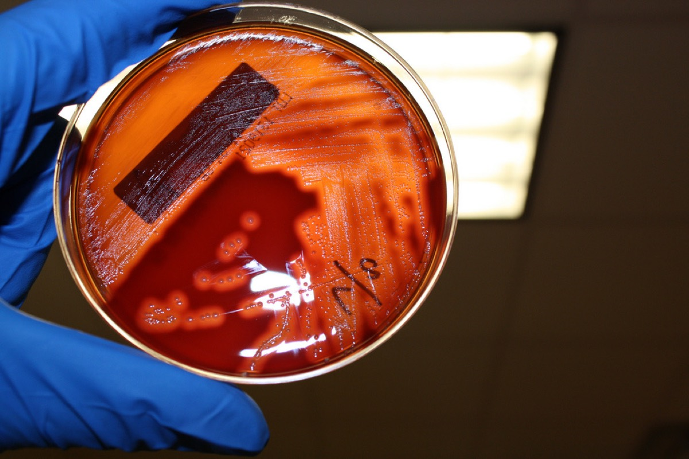
La siembra por agotamiento convierte una muestra mixta en colonias aisladas e interpretables
¿Por qué se flamea el asa entre cuadrante y cuadrante?
Cada vez que se flamea el asa se elimina casi todo el inóculo; lo poco que arrastra del cuadrante anterior se diluye hasta que quedan bacterias individuales que forman colonias separadas.
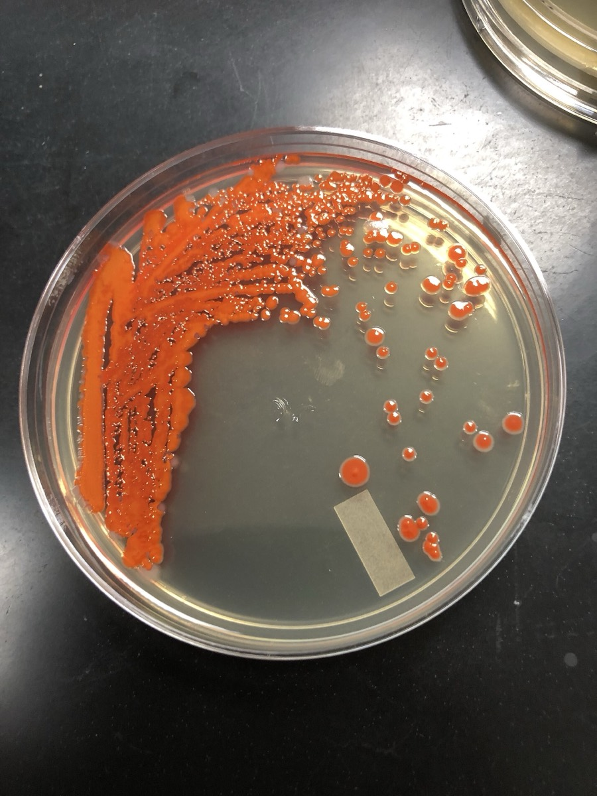
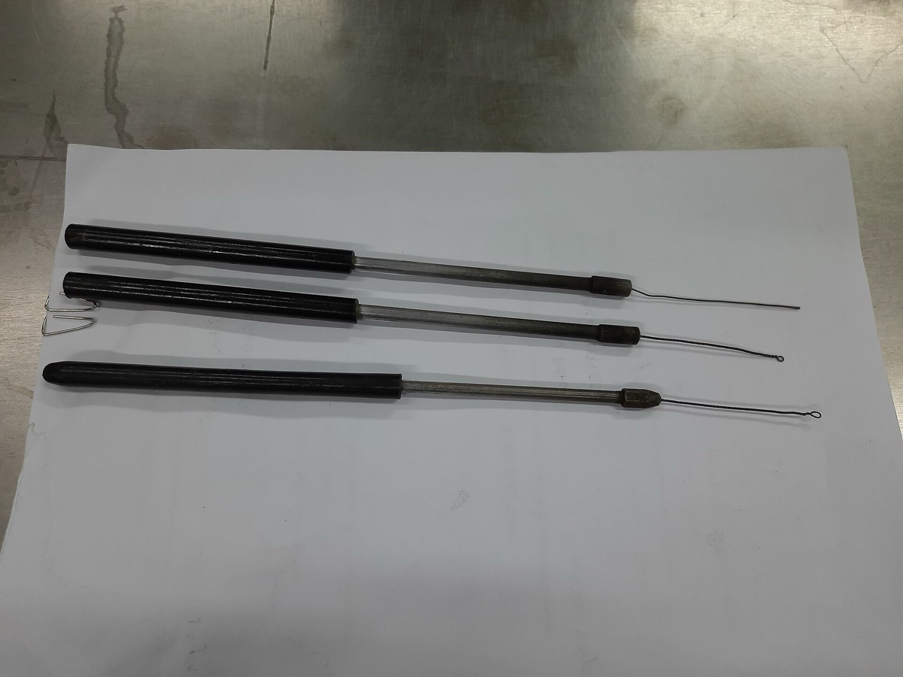
Reglas de oro
- Flamear el asa al rojo y dejarla enfriar 10 segundos (o tocar el agar en un borde) antes de sembrar.
- No sobrecargar: el error más común de principiante es poner demasiada muestra.
- Rotar la placa 90° en cada cuadrante y cruzar apenas el anterior.
- Trabajar cerca del mechero o dentro de la cabina; tapa entreabierta el menor tiempo posible.
- Rotular el fondo de la placa, no la tapa.
La atmósfera, la temperatura y el tiempo son parte del medio de cultivo
¿Por qué las placas se incuban boca abajo?
| Condición | Cómo se logra | Quién la necesita |
|---|---|---|
| Aerobiosis, 35 a 37 °C | Incubadora convencional | Enterobacterales, Staphylococcus, Pseudomonas |
| CO2 al 5 a 10 % | Incubadora de CO2 o jarra con vela | Neisseria, Haemophilus, S. pneumoniae, la mayoría de los estreptococos |
| Microaerofilia (5 % O2) | Jarra con sobre generador específico | Campylobacter (a 42 °C), Helicobacter |
| Anaerobiosis | Jarra con sobre generador (GasPak) o cámara anaerobia | Bacteroides, Clostridium, Fusobacterium, Peptostreptococcus |
| Prolongada (semanas) | Tubos sellados, revisión semanal | Micobacterias (hasta 8 semanas), hongos (hasta 4 semanas), Brucella, Bartonella |
| 30 °C | Incubadora aparte | Hongos, Yersinia, algunas micobacterias cutáneas |
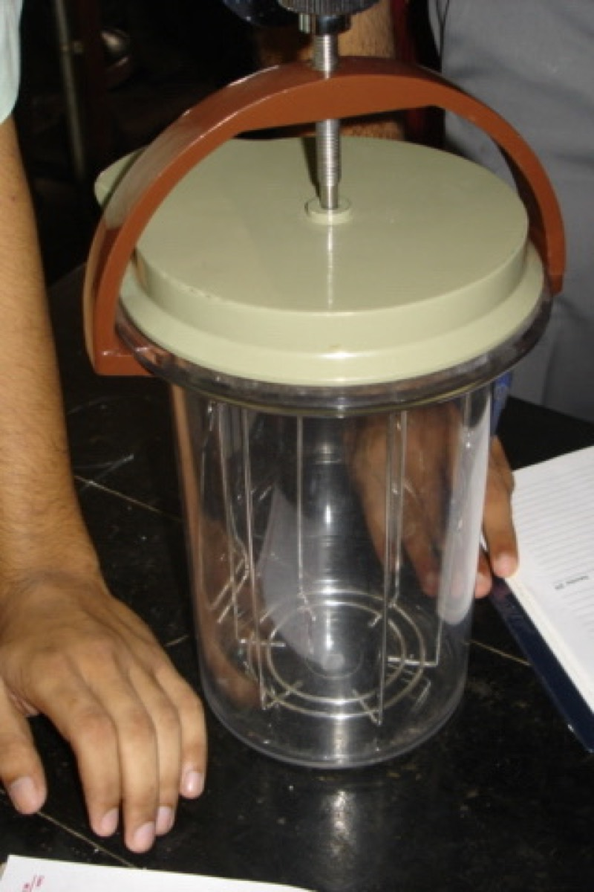
La morfología de la colonia decide qué se subcultiva, qué se identifica y qué se informa
Describe una colonia con seis palabras: tamaño, forma, borde, elevación, superficie y color.
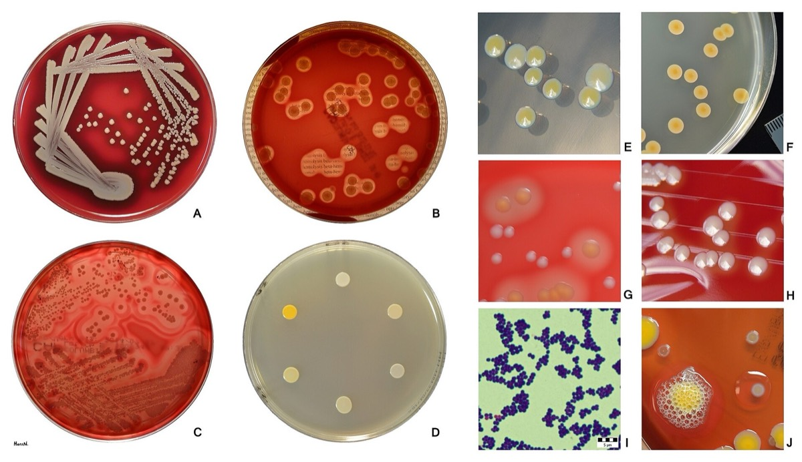
Apariencia
Tamaño (puntiforme, pequeña, mediana, grande), forma (circular, irregular, filamentosa), borde (entero, ondulado, lobulado), elevación (plana, convexa, umbilicada), superficie (lisa, rugosa, mucoide), color y olor.
Reacción del medio
Hemólisis, fermentación (color), H2S, pigmentos difusibles, enjambre, precipitados. Lo que el medio muestra alrededor de la colonia vale tanto como la colonia.
Cantidad y pureza
En urocultivo y muestras respiratorias, el recuento y la mezcla cambian el significado clínico: 100 000 UFC/mL de un solo morfotipo es infección; tres morfotipos con 10 000 cada uno es contaminación.
¿Qué medio siembro? Seis casos para decidir
Elige el medio que mejor responde a cada caso. Recibirás retroalimentación inmediata; puedes reiniciar las veces que quieras.
Las pruebas bioquímicas convierten el metabolismo en identificación
Tienes cocos grampositivos en racimos. ¿Cuál es la primera prueba y cuál la segunda?
Respuesta a la pregunta: primero catalasa (separa estafilococos de estreptococos) y después coagulasa (separa S. aureus de los coagulasa negativos). Dos gotas y dos minutos.
| Prueba | Qué evalúa | Uso típico | Precaución |
|---|---|---|---|
| Catalasa | Descomposición de H2O2 en agua y oxígeno (burbujas) | Estafilococos (+) frente a estreptococos (–) | No tomar la colonia con sangre: los eritrocitos tienen catalasa y dan falso positivo. |
| Coagulasa | Coagulación del plasma (en tubo) o factor de agregación (en lámina) | S. aureus (+) frente a coagulasa negativos | Leer el tubo a las 4 horas y a las 24; algunas cepas coagulan tarde. |
| Oxidasa | Citocromo c oxidasa | Pseudomonas, Vibrio, Neisseria | Leer antes de 30 segundos; el reactivo se oxida con la luz; no usar asa de hierro. |
| Indol, ureasa, citrato | Triptofanasa, ureasa, uso de citrato como única fuente de carbono | Enterobacterales (E. coli: indol +; Proteus: ureasa +) | Cultivo puro, tiempo de incubación indicado. |
| TSI / Kligler | Glucosa, lactosa, sacarosa, gas, H2S | Enterobacterales y patógenos entéricos | Leer entre 18 y 24 horas: antes o después cambia el color. |
| Bilis-esculina y NaCl 6,5 % | Hidrólisis de esculina; tolerancia a sal | Enterococcus (ambas +) | El grupo D no enterococo es esculina + pero NaCl –. |
| Optoquina y bilis | Sensibilidad al disco; lisis por bilis | S. pneumoniae (sensible, soluble) | Incubar en CO2; halo mayor o igual a 14 mm con disco de 6 mm. |
MALDI-TOF identifica una colonia en minutos comparando su huella de proteínas
¿Qué le pasa al espectro si la colonia que tomaste no era pura?
Fortalezas
Rápido, costo bajo por prueba, identifica bacterias, levaduras y muchas micobacterias directamente de colonia. Ha reemplazado a la bioquímica en la mayoría de los laboratorios grandes.
Límites
Necesita colonia pura y biomasa suficiente. Confunde especies muy cercanas: E. coli y Shigella, S. pneumoniae y S. mitis. No informa sensibilidad a antibióticos.
El antibiograma conecta la microbiología con la terapia dirigida y la vigilancia de la resistencia
¿Por qué un halo grande alrededor del disco no siempre significa «sensible»?
Métodos
- Difusión en disco: cualitativo (sensible, intermedio, resistente). Barato y flexible.
- Microdilución en caldo: concentración inhibitoria mínima (CIM) en µg/mL; es el método de referencia y el que usan los equipos automatizados.
- Tira de gradiente (Etest): CIM en agar; útil para antibióticos específicos o bacterias exigentes.
- Pruebas rápidas y genotípicas: detección de mecA (MRSA), carbapenemasas, vanA; complementan pero no sustituyen al fenotipo.
Lo que cambia el resultado
- Inóculo fuera del estándar (más denso: halos pequeños; más ralo: halos grandes).
- Mueller-Hinton con pH, cationes o grosor (4 mm) incorrectos.
- Incubación fuera de tiempo (16 a 18 horas) o atmósfera.
- Leer sin cepas control (E. coli ATCC 25922, S. aureus ATCC 25923, P. aeruginosa ATCC 27853).
- Probar antibióticos que no corresponden al sitio (nitrofurantoína solo sirve en orina) o a la especie.
Antígenos y anticuerpos sirven cuando el cultivo no es posible, no es oportuno o no es suficiente
Una IgG positiva en una sola muestra, ¿dice que el paciente está enfermo ahora?
Antígeno y ácidos nucleicos aparecen primero; IgM sube en 1 a 2 semanas y baja en meses; IgG sube después y puede durar años. La «ventana» es el periodo en que hay infección pero todavía no hay anticuerpos.
| Prueba | Qué detecta | Interpretación |
|---|---|---|
| Antígeno | Componente del microorganismo | Infección activa o reciente; sensibilidad variable. Ejemplos: antígeno de neumococo y Legionella en orina, criptocócico en LCR, H. pylori en heces. |
| IgM | Respuesta temprana | Sugiere infección reciente; puede persistir meses y dar falsos positivos por factor reumatoide o reacciones cruzadas. |
| IgG | Exposición pasada o respuesta tardía | Una sola muestra positiva solo dice «ya se expuso». Seroconversión o aumento de 4 veces en el título entre dos muestras separadas 2 a 4 semanas sí indica infección actual. |
| Avidez de IgG | Maduración del anticuerpo | Avidez baja: infección de menos de 3 a 4 meses. Útil en toxoplasmosis y citomegalovirus en el embarazo. |
| Prueba confirmatoria | Patrones específicos (inmunoblot, treponémica) | Cuando el tamizaje es muy sensible pero poco específico: VIH, sífilis, hepatitis C. |
Las pruebas moleculares reducen el tiempo, pero exigen control de contaminación e interpretación clínica
Si la PCR de un esputo es positiva para M. tuberculosis, ¿por qué el laboratorio sigue cultivando?
Flujo molecular
- Toma en medio compatible; evitar inhibidores (heparina, hemoglobina, sales biliares).
- Extracción y purificación de ácidos nucleicos.
- Amplificación de la diana (PCR, RT-PCR para ARN, isotérmica como LAMP).
- Detección: en tiempo real (fluorescencia, ciclo umbral o Ct) o en punto final.
- Controles interno, positivo y negativo en cada corrida.
- Informe con la diana detectada, la validación local y sus límites.
Cuándo la PCR es la primera opción
- Microorganismos que no crecen o crecen lento: virus, Chlamydia, Mycoplasma, Bordetella pertussis, M. tuberculosis.
- Urgencias donde las horas importan: meningitis y encefalitis (panel en LCR), sepsis (panel de hemocultivo positivo).
- Infecciones de transmisión sexual: NAAT en orina o hisopo supera al cultivo para gonorrea y clamidia.
- Detección directa de genes de resistencia: rpoB (rifampicina), mecA, carbapenemasas.
- Carga viral cuantitativa para seguimiento: VIH, hepatitis B y C, citomegalovirus.
Las pruebas en el punto de atención acercan el resultado al paciente, pero no eliminan el control de calidad
¿Cuándo confías en una prueba rápida negativa y cuándo la confirmas?
Antígeno rápido
Minutos, sin equipo. Sensibilidad menor que la PCR: un negativo con alta sospecha clínica se confirma (por ejemplo, faringitis estreptocócica en niños: cultivo o NAAT si el antígeno es negativo).
Molecular rápido
15 a 60 minutos en cartucho. Sensibilidad comparable a la PCR de laboratorio; costo mayor; requiere equipo y controles.
Serológico rápido
Tamizaje de VIH, sífilis, hepatitis. Depende de la ventana inmunológica; un positivo se confirma siempre.
Química cercana
Lactato, procalcitonina, gases, glucosa: orientan gravedad y decisión de antibiótico, pero no identifican al patógeno.
El mejor algoritmo depende del síndrome y de la urgencia
Para cada síndrome, ¿cuál es la muestra que nunca puede faltar?
| Síndrome | Primera muestra | Pruebas iniciales | Confirmación o siguiente paso |
|---|---|---|---|
| Sepsis | Dos o tres pares de hemocultivos antes del antibiótico, sin retrasarlo | Gram del frasco positivo (resultado crítico), subcultivo, MALDI-TOF o panel molecular del frasco | Antibiograma; buscar el foco; repetir hemocultivos si persiste la fiebre |
| Meningitis | LCR urgente (citoquímico, Gram, cultivo) y hemocultivos | Gram y cultivo; antígeno o panel molecular según edad y epidemiología | Antibiograma; PCR para virus si el perfil es linfocitario |
| Neumonía | Esputo de calidad o aspirado; hemocultivos si se hospitaliza | Gram y cultivo; antígenos urinarios (neumococo, Legionella); panel viral en temporada | Distinguir colonización de infección; BAAR y NAAT si hay factores de riesgo |
| Infección urinaria | Orina de chorro medio bien tomada | Examen general de orina; urocultivo cuantitativo; Gram directo si es urgente | Identificación y antibiograma si el recuento es significativo (100 000 UFC/mL, o menos con síntomas y leucocituria) |
| Tuberculosis pulmonar | Dos esputos (uno matutino) o inducido | NAAT (Xpert MTB/RIF) como prueba inicial; baciloscopia | Cultivo en medio líquido y sólido; pruebas de sensibilidad completas |
| Gastroenteritis | Heces líquidas, frescas o en Cary-Blair | Coprocultivo (XLD, Hektoen, MacConkey, TCBS si aplica) o panel molecular según gravedad y brote | Confirmar aislamientos para vigilancia; antibiograma solo si se va a tratar |
| Faringitis | Hisopo de amígdalas y faringe posterior | Antígeno rápido de estreptococo A; cultivo en agar sangre si es negativo en niños | Ninguna en la mayoría: es un diagnóstico de una sola prueba |
| Infección de piel y tejidos blandos | Aspirado de absceso o biopsia; hemocultivos si hay fiebre | Gram y cultivo aerobio y anaerobio | Antibiograma; buscar MRSA |
Antes de pedir una prueba, responde cuatro preguntas en orden
Elige un foco de infección y observa cómo se responden las cuatro preguntas.
Selecciona un foco de infección para ver la muestra, las pruebas iniciales, el límite principal y el siguiente paso.
Si la decisión es urgente
Usa las pruebas rápidas que cambian la conducta inmediata: Gram de LCR, Gram de hemocultivo positivo, antígenos, NAAT o pruebas en el punto de atención. Después completa con cultivo, identificación y antibiograma.
Si el resultado contradice la clínica
Revisa la calidad de la muestra, los antibióticos previos, el tiempo de transporte, el sitio de toma, los inhibidores moleculares, los controles y la posibilidad de colonización o contaminación. Y considera repetir la muestra.
Los errores se previenen en tres momentos: antes, durante y después de la prueba
De los doce errores de la lista, ¿cuáles dependen del médico que solicita y cuáles del laboratorio?
Preanalíticos (60 a 70 % de los errores)
- Muestra equivocada, superficial o contaminada.
- Tiempo o temperatura de transporte inadecuados.
- Volumen insuficiente (hemocultivo con 2 mL).
- Solicitud sin diagnóstico ni antibióticos previos.
Postanalíticos
- Resultado crítico (Gram de LCR, hemocultivo positivo) que no se comunica de inmediato.
- Interpretación sin contexto clínico.
- Antibiograma informado sin reglas interpretativas.
- No decir las limitaciones de la prueba en el informe.
Resuelve el caso antes de abrir la respuesta
Para cada caso escribe: muestra prioritaria, prueba inicial, límite y siguiente paso. Luego compara.
Caso A · Fiebre, cefalea y rigidez de nuca
Mujer de 19 años, 12 horas de evolución, petequias en piernas. ¿Qué muestra es prioritaria y qué pruebas iniciales pides?
Ver razonamiento
Muestra: LCR por punción lumbar (si no hay contraindicación) y dos pares de hemocultivos, todo antes del antibiótico pero sin retrasarlo más de 30 minutos. Pruebas: citoquímico, Gram (diplococos gramnegativos sugieren N. meningitidis), cultivo, panel molecular o antígenos. Límite: el Gram es negativo en la mitad de los casos si ya recibió antibiótico. Siguiente paso: antibiograma; aislamiento respiratorio y profilaxis a contactos si se confirma meningococo.
Caso B · Disuria, fiebre y dolor lumbar
Hombre de 68 años con sonda vesical desde hace 3 semanas. ¿Qué puede convertir el urocultivo en un resultado engañoso?
Ver razonamiento
Muestra: orina del puerto de la sonda recién colocada (cambiarla primero), nunca de la bolsa. Engaños: la sonda se coloniza siempre; un cultivo positivo sin síntomas es bacteriuria asintomática y no se trata; demora sin refrigerar infla el recuento; mezcla de tres especies sugiere contaminación. Siguiente paso: hemocultivos por la fiebre, identificación y antibiograma del aislado predominante.
Caso C · Tos de dos meses, sudoración nocturna y pérdida de 6 kg
Baciloscopia de esputo con BAAR 2+. ¿Puedes informar tuberculosis confirmada solo con ese dato?
Ver razonamiento
No. BAAR positivo indica micobacteria, pero no distingue M. tuberculosis de micobacterias no tuberculosas. Siguiente paso: Xpert MTB/RIF (confirma el complejo M. tuberculosis y detecta resistencia a rifampicina en 2 horas) y cultivo en medio líquido y sólido para sensibilidad completa. Mientras tanto: aislamiento respiratorio y notificación epidemiológica, que en México es obligatoria.
Caso D · Absceso en el muslo con crepitación
El médico envía un hisopo de la superficie de la herida. ¿Por qué puede fallar y qué muestra sería mejor?
Ver razonamiento
Falla porque el hisopo superficial recoge colonizantes de la piel y los anaerobios mueren con el oxígeno del hisopo seco. Mejor muestra: aspirado con jeringa (tapar y enviar sin aire) o tejido de la pared del absceso, en medio de transporte para anaerobios, avisando al laboratorio. Pruebas: Gram urgente (bacilos grampositivos grandes con esporas sugieren Clostridium), cultivo aerobio y anaerobio. Siguiente paso: desbridamiento quirúrgico; el cultivo no sustituye al bisturí.
Doce preguntas para saber si ya puedes usar el mapa diagnóstico
Responde cada pregunta; la retroalimentación explica por qué. Al final verás tu puntaje y qué secciones repasar.
Tu comprobante de trabajo: lo que estudiaste y lo que respondiste
Registra tu nombre, completa la autoevaluación y el juego de medios, y genera el comprobante para entregarlo en Classroom.
50 % autoevaluación (mejor intento) · 20 % juego de medios (mejor intento) · 30 % secciones revisadas. La profesora decide la ponderación final.
Registra tu nombre con el botón «Mi registro» de la barra superior para generar el comprobante.
Descarga de calificaciones
Acceso docente para descargar el concentrado de resultados enviados por los alumnos.
Tarjetas de repaso: toca para voltear
Di la respuesta en voz alta antes de voltear. Las que falles, anótalas en tu portafolio con la sección donde se explican.
Términos que aparecen en el material
- Ácido-alcohol resistente (BAAR)
- Bacteria que retiene la fucsina después de lavar con alcohol ácido, por los ácidos micólicos de su pared. Ver Ziehl-Neelsen.
- Agar
- Polisacárido de algas rojas que gelifica los medios. Funde a 100 °C y solidifica a 45 °C; casi ninguna bacteria lo degrada.
- Antibiograma
- Prueba de sensibilidad de un aislado a un panel de antibióticos, por difusión en disco o por dilución (CIM). Ver antibiograma.
- Avidez
- Fuerza de unión de la IgG a su antígeno; aumenta con los meses. Baja avidez sugiere infección reciente.
- Bacteriemia
- Presencia de bacterias viables en la sangre, demostrada por hemocultivo.
- BLEE
- Betalactamasa de espectro extendido: enzima de gramnegativos que inactiva penicilinas y cefalosporinas. Se detecta por el efecto de cerradura o por pruebas confirmatorias.
- Cepa de referencia (ATCC)
- Microorganismo de una colección certificada con comportamiento conocido, usado como control de medios, tinciones y antibiogramas.
- CIM
- Concentración inhibitoria mínima: la menor concentración de antibiótico que impide el crecimiento visible. Se expresa en µg/mL.
- Colonización
- Presencia de un microorganismo en una superficie del cuerpo sin causar enfermedad. Un cultivo positivo de un sitio colonizado no siempre significa infección.
- Ct (ciclo umbral)
- En PCR en tiempo real, el ciclo en que la fluorescencia cruza el umbral. Cuanto más bajo, más ADN había al inicio.
- Diferencial (medio)
- Medio que hace visible una reacción metabólica mediante un cambio de color o de aspecto.
- Enriquecido (medio)
- Medio con factores de crecimiento (sangre, hemina, NAD) para bacterias exigentes.
- Exigente o fastidiosa
- Bacteria que no crece en medios basales porque requiere factores especiales o atmósfera con CO2.
- Fase preanalítica
- Todo lo que ocurre antes de que la muestra se procese: solicitud, toma, rotulado, transporte y recepción.
- Hemólisis
- Destrucción de eritrocitos alrededor de una colonia en agar sangre: beta (total), alfa (parcial, verdosa) o gamma (ninguna).
- Inmunocromatografía
- Prueba rápida en tira donde el antígeno o anticuerpo migra y se revela como una línea de color.
- MALDI-TOF
- Espectrometría de masas por desorción e ionización con láser asistida por matriz y tiempo de vuelo. Identifica por el patrón de proteínas ribosomales.
- Medio de transporte
- Medio sin nutrientes, con reductores y amortiguadores, que mantiene viva la muestra sin permitir que se multiplique (Stuart, Amies, Cary-Blair, medio viral). Ver medios de transporte.
- Microbiota
- Comunidad de microorganismos que habita normalmente una superficie del cuerpo. Antes se llamaba «flora».
- Migración en enjambre (swarming)
- Crecimiento de Proteus que se extiende en ondas por toda la placa. Se evita con CLED o con medios sin electrolitos.
- Morfotipo
- Tipo de colonia o de bacteria distinguible por su aspecto. «Tres morfotipos» significa tres tipos distintos.
- NAAT
- Prueba de amplificación de ácidos nucleicos: PCR, RT-PCR, LAMP y similares.
- POCT
- Pruebas en el punto de atención (point-of-care testing): se realizan junto al paciente y dan resultado en minutos.
- Punto de corte
- Valor de halo o de CIM que separa sensible, intermedio y resistente. Lo publican CLSI (M100) y EUCAST cada año.
- Selectivo (medio)
- Medio con inhibidores que impiden crecer a la microbiota que no interesa.
- Seroconversión
- Paso de anticuerpos negativos a positivos entre dos muestras; demuestra infección reciente.
- Siembra por agotamiento
- Técnica de estriado en cuadrantes que diluye el inóculo hasta obtener colonias aisladas.
- UFC
- Unidad formadora de colonia: cada colonia proviene de una bacteria o un grupo pequeño. Es la unidad del recuento en urocultivo.
- Ventana inmunológica
- Periodo entre la infección y la aparición de anticuerpos detectables, durante el cual la serología es negativa.
Material visual para reforzar la técnica antes de la práctica
Tinciones y frotis
- CDC: How to perform a Gram stain. Microaprendizaje con video paso a paso.
- CDC: Core microbiology skills. Frotis, Gram, catalasa, oxidasa y motilidad.
- CDC TB 101: lectura de frotis BAAR.
Medios, siembra y placas
- ASM: The streak plate protocol. Objetivo y pasos del estriado.
- BCIT: Microbiology lab basics. Serie de videos: verter placas, sembrar, autoclave.
- LibreTexts: Introduction to growth media.
Bioseguridad y calidad
- OMS: videos de buenas prácticas de laboratorio. Equipo de protección, pipetas, punzocortantes, descontaminación.
- CDC: calidad en pruebas cercanas al paciente.
Tuberculosis y métodos moleculares
Bibliografía
Bibliografía básica del programa (PUA I8581)
- Murray PR, Rosenthal KS, Pfaller MA. Microbiología médica. 10.ª ed. Elsevier; 2026.
- Riedel S, Hobden JA, Morse SA, et al. Jawetz, Melnick y Adelberg. Microbiología médica. 29.ª ed. McGraw Hill; 2026.
- Blaser MJ, Cohen JI, Holland SM, eds. Mandell, Douglas, and Bennett's Principles and Practice of Infectious Diseases. 10.ª ed. Elsevier; 2025.
Diagnóstico microbiológico y calidad
- Miller JM, Binnicker MJ, Campbell S, et al. Guide to utilization of the microbiology laboratory for diagnosis of infectious diseases: 2024 update by the Infectious Diseases Society of America (IDSA) and the American Society for Microbiology (ASM). Clin Infect Dis. 2024. doi:10.1093/cid/ciae104.
- Leber AL, Burnham CAD, eds. Clinical Microbiology Procedures Handbook. 5.ª ed. ASM Press; 2023.
- Procop GW, Church DL, Hall GS, et al. Koneman. Diagnóstico microbiológico: texto y atlas. 7.ª ed. Wolters Kluwer; 2017.
- Clinical and Laboratory Standards Institute. M100. Performance Standards for Antimicrobial Susceptibility Testing. Edición vigente. CLSI. clsi.org
- European Committee on Antimicrobial Susceptibility Testing. Clinical breakpoint tables. Versión vigente. eucast.org
- Bonnet M, Lagier JC, Raoult D, Khelaifia S. Bacterial culture through selective and non-selective conditions: the evolution of culture media in clinical microbiology. New Microbes New Infect. 2020;34:100622.
- Rodríguez-Sánchez B, Cercenado E, Coste AT, Greub G. Review of the impact of MALDI-TOF MS in public health and hospital hygiene, 2018. Euro Surveill. 2019;24(4). Y: Current status of MALDI-TOF mass spectrometry in clinical microbiology.
Bioseguridad, tuberculosis y normatividad mexicana
- Organización Mundial de la Salud. Manual de bioseguridad en el laboratorio. 4.ª ed. OMS; 2020. who.int
- Organización Mundial de la Salud. WHO consolidated guidelines on tuberculosis. Module 3: diagnosis. OMS; 2024-2025. who.int
- Centers for Disease Control and Prevention. Clinical and laboratory diagnosis for tuberculosis. CDC; 2025. cdc.gov
- Centers for Disease Control and Prevention. Collect adult blood culture sets; preventing blood culture contamination. cdc.gov
- Secretaría de Salud. NOM-006-SSA2-2013, Para la prevención y control de la tuberculosis. Diario Oficial de la Federación; 13 de noviembre de 2013.
- Secretaría de Salud. NOM-007-SSA3-2011, Para la organización y funcionamiento de los laboratorios clínicos. Diario Oficial de la Federación; 27 de marzo de 2012.
- SEMARNAT y Secretaría de Salud. NOM-087-ECOL-SSA1-2002, Protección ambiental. Salud ambiental. Residuos peligrosos biológico-infecciosos. Clasificación y especificaciones de manejo. Diario Oficial de la Federación; 17 de febrero de 2003.
Los enlaces se verificaron el 17 de septiembre de 2026. Las cifras de sensibilidad, tiempos y temperaturas son valores orientativos tomados de las fuentes anteriores; el procedimiento vigente de cada laboratorio tiene prioridad.
Créditos, cómo citar y licencia
iDorcid.org/0000-0003-0251-6425
iDorcid.org/0009-0006-1901-392X
Cómo citar este material
De Arcos-Jiménez JC, Briseño-Ramírez J. Diagnóstico microbiológico médico: muestras, frotis, tinciones, cultivos y métodos rápidos. Material didáctico de Microbiología I (I8581), versión 2.1. Cuerpo Académico UDG-CA-1190, Centro Universitario de Tlajomulco, Universidad de Guadalajara; 2026. Disponible en: https://udgca1190.com.mx/herramientas/diagnostico-microbiologico
Licencia y uso
Texto, esquemas y ejercicios: © 2026 Judith Carolina De Arcos Jiménez y Jaime Briseño Ramírez, bajo licencia Creative Commons Atribución-NoComercial-CompartirIgual 4.0. Puede copiarse y adaptarse con fines educativos citando a los autores.
Las fotografías conservan la licencia de su autor original (dominio público, CC0, CC BY o CC BY-SA), indicada en cada pie de figura y en la lista siguiente. Este recurso es de estudio y no sustituye los procedimientos normalizados del laboratorio ni las guías clínicas.
Versión 2.1 · 17 de septiembre de 2026 · Diseño instruccional y desarrollo: Judith Carolina De Arcos Jiménez y Jaime Briseño Ramírez.
Atribución de imágenes (Wikimedia Commons y CDC Public Health Image Library)
- Gram mixto (S. aureus y E. coli), frotis de S. aureus con escala, hemólisis α β γ: Y tambe, CC BY-SA 3.0. S. aureus en racimos y E. coli en Gram: Dr Graham Beards, CC BY-SA 4.0. S. pyogenes en cadenas: Gary E. Kaiser, CC BY 3.0. S. pneumoniae: Arnold Kaufman, CC0. Bacillus anthracis en Gram: CDC, dominio público.
- Candida en Gram, esputo BAAR, KOH de piel, orina para cultivo, medios preparados, hemocultivo positivo, placas de agar sangre, asas de siembra, CLED, MacConkey fermentadoras y no fermentadoras, EMB, Haemophilus en chocolate, Sabouraud, M. tuberculosis en L-J, Pseudomonas en sangre, TSI, oxidasa, ELISA, auramina, agar sangre beta, esputo gramnegativo: Ajay Kumar Chaurasiya, CC0, CC BY 4.0 o CC BY-SA 4.0 según se indica en cada figura.
- Diplococos intracelulares de N. gonorrhoeae: CDC/Dr. Norman Jacobs, dominio público. Tinta china de Cryptococcus: CDC/Dr. Leanor Haley, dominio público. Chocolate frente a Thayer-Martin: CDC, dominio público. Agar chocolate: CDC/Megan Mathias y J. Todd Parker, dominio público.
- Cocos grampositivos y bacilos gramnegativos, Proteus en enjambre, efecto de cerradura BLEE: Microrao, CC BY-SA 4.0.
- Pared celular en 3D: Scientific Animations, CC BY-SA 4.0. Ziehl-Neelsen: Siduduziwe Nxumalo, CC BY-SA 4.0. Esporas: T. Nims, CC BY-SA 4.0. Gram de hemocultivo y placa diana MALDI: Spicy, CC BY-SA 4.0. Microscopio: Confidence24, CC BY-SA 4.0.
- Hisopos de transporte: Avopasia, CC BY-SA 4.0. Signos de crecimiento en hemocultivo: Ombelet S. et al., CC BY 4.0. Cabina: Chainwit., CC BY-SA 4.0. Autoclave: Nadina Wiórkiewicz, CC BY-SA 3.0. Incubadora: Shinryuu, dominio público. Jarra de anaerobiosis: Netha Hussain, CC BY-SA 3.0.
- Siembra por agotamiento con Serratia: Rosanna Hartline, CC BY-SA 4.0. S. pyogenes en agar sangre: Micronerdbox, CC BY 2.0. S. aureus en placas y manitol salado: HansN., CC BY 3.0 y CC BY-SA 3.0. MacConkey con E. coli: Pollo, CC BY 3.0. XLD con Salmonella: Nathan Reading, CC BY 2.0. Hektoen: Mediocreclementine, CC0. TCBS: Chainwit., CC BY-SA 4.0. Tubos de Löwenstein-Jensen: Mikael Häggström, CC0.
- Kirby-Bauer: Dr Graham Beards, CC BY-SA 4.0. Antibiograma de Pseudomonas: Stefan Walkowski, CC BY-SA 4.0. Tiras de gradiente: LR0725, CC BY-SA 4.0. Termociclador: Juan Carlos Fonseca Mata, CC BY-SA 4.0. GeneXpert: Aliva Sahoo, CC BY-SA 4.0. Prueba rápida de antígeno: ZupaBA VUCBA, CC BY 2.0. Proceso MALDI-TOF: Solntceva et al., CC BY 4.0. Frascos de hemocultivo: Wikimedia Commons.